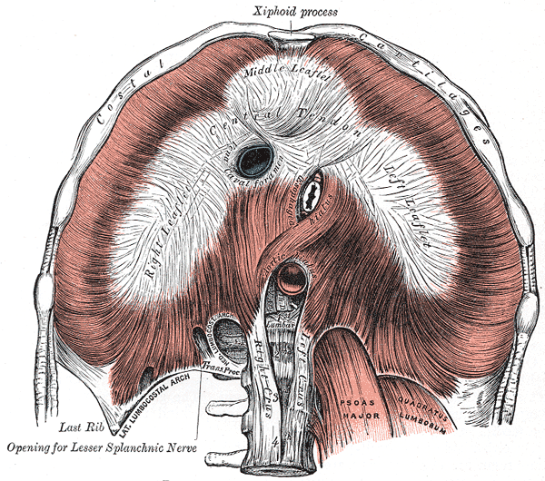
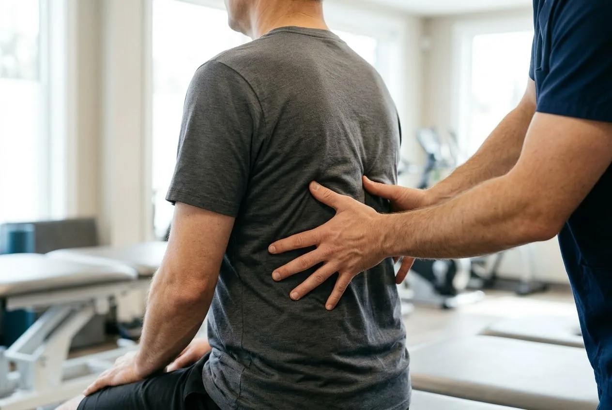
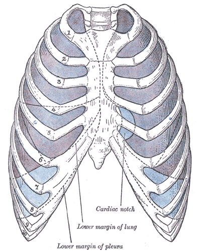
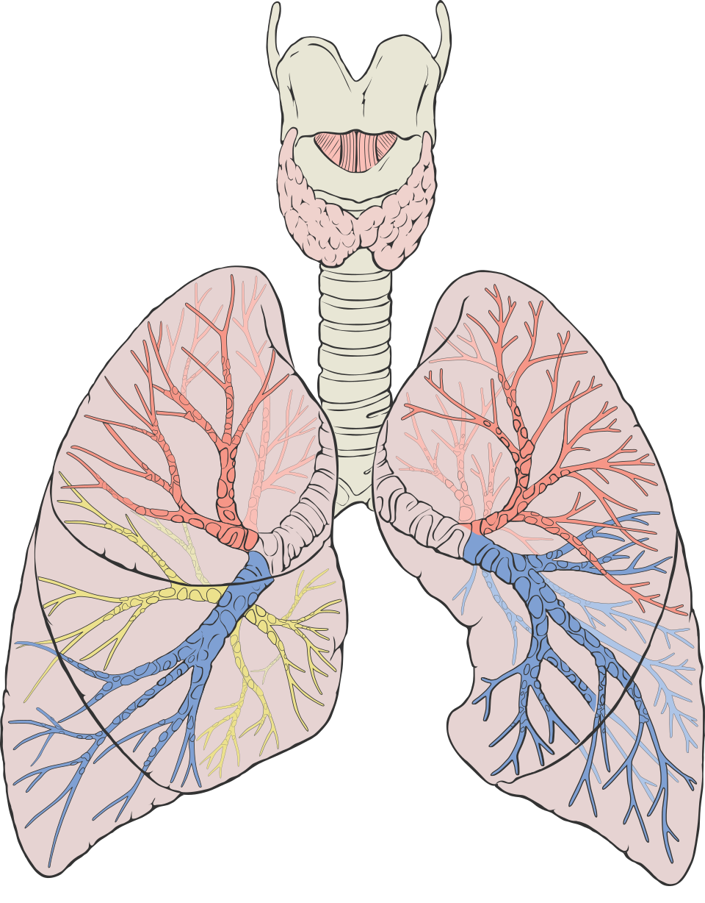
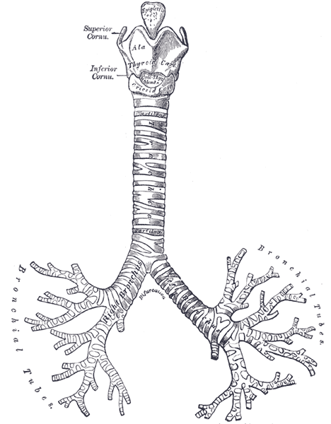
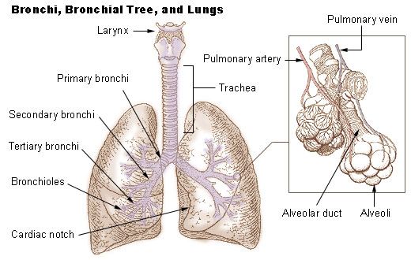
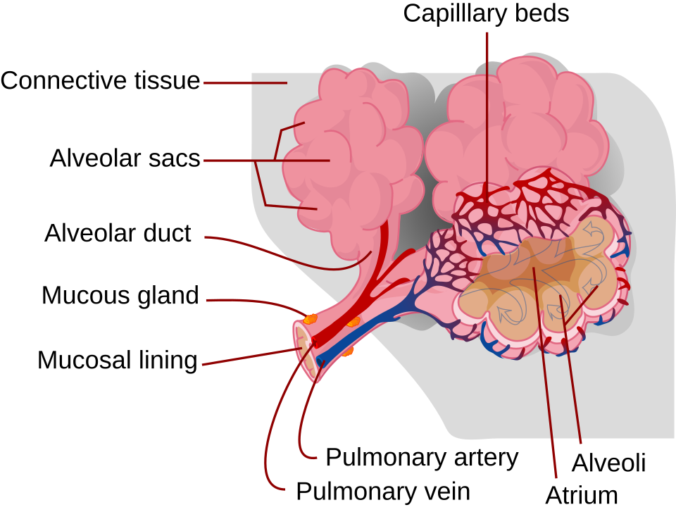
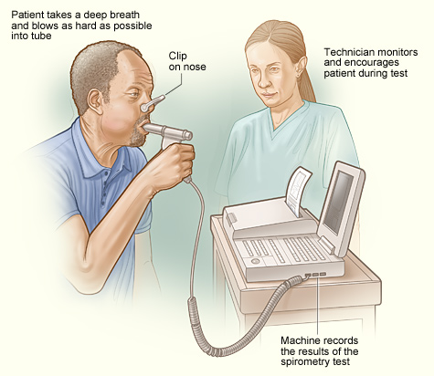
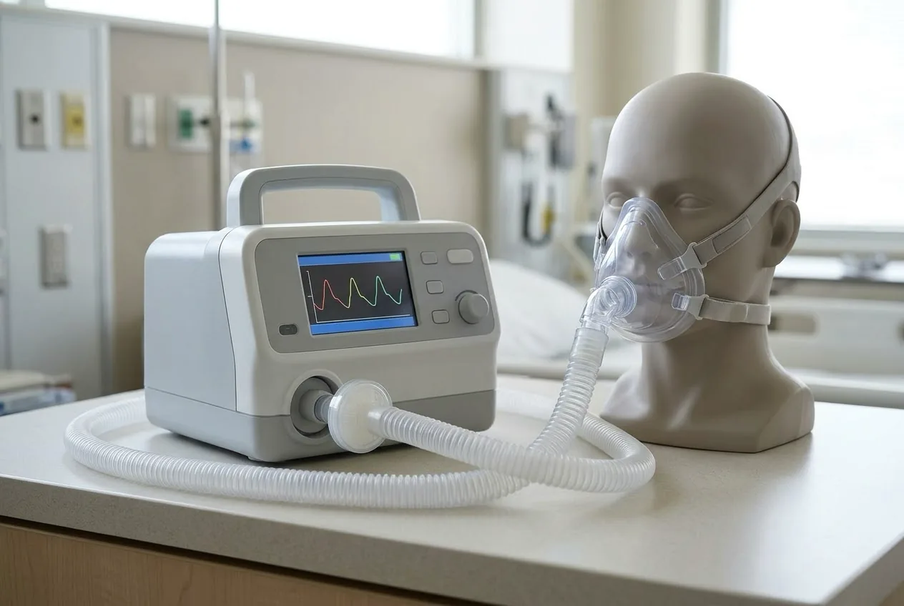
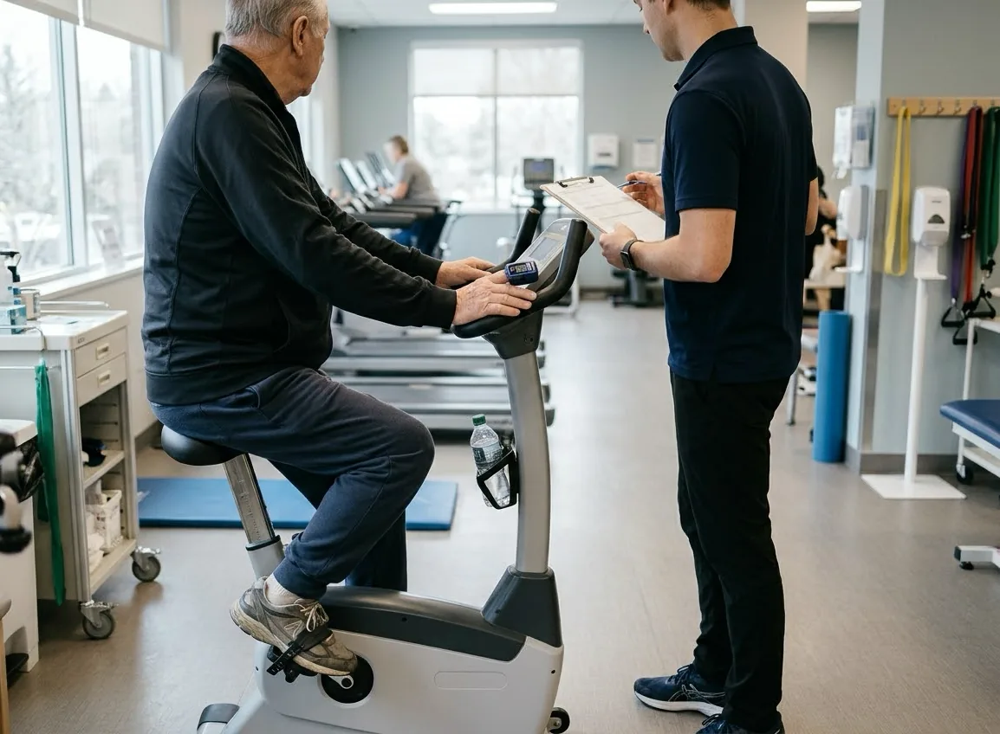

Programa formativo para fisioterapeutas · por Rafael Jiménez
Curso de Fisioterapia Respiratoria para fisioterapeutas
Dieciséis módulos aplicados, de los fundamentos a la prescripción avanzada. Cada módulo explica el porqué fisiológico solo en la medida en que cambia lo que haces con las manos o con un dispositivo.
Dedicación: 45-60 min al día; los días 4 y 5 de cada semana, más ligerosDuración: 17 semanasCada módulo: objetivos, teoría aplicada, técnica paso a paso, vídeos con tarea, evaluación interactiva y referencias
Resumen por semanas. El detalle de cada día, con casillas para marcar lo hecho, está en el plan de estudio, donde también puedes elegir tu fecha de inicio.
Wikimedia Commons (autor y licencia bajo cada imagen); esquemas propios
Cómo citar este curso
Jiménez R. Curso de Fisioterapia Respiratoria para fisioterapeutas [Internet]. RafaelJL; 2026 [versión 1.0; revisado el 24 de noviembre de 2026]. Disponible en: https://rafacapi17-dev.github.io/aprendizaje/fisioterapia-respiratoria/
Alcance. Material formativo para fisioterapeutas. Resume la evidencia disponible y la práctica habitual, pero no sustituye las guías clínicas ni el criterio profesional ante cada paciente. Los enlaces a vídeos de terceros se comprobaron el 24 de noviembre de 2026 y pueden cambiar.
Las fotografías proceden de Wikimedia Commons con licencia libre (se cargan desde allí); el autor y la licencia figuran bajo cada una. Los esquemas son de elaboración propia. Las imágenes marcadas como generadas con IA (figuras 1.2, 5.1 y 8.1) son ilustrativas y no reproducen casos reales. Las pautas de dosificación son rangos orientativos tomados de las guías y estudios citados en las referencias de cada módulo; individualízalas siempre según el paciente y los protocolos de tu centro.
Plan de estudio · semana 1
Primera semana, día a día
Siete días para arrancar: cubres el módulo 1 completo y la mitad del módulo 2, con una práctica corta cada día.
Cada día: 45-60 minDías 4 y 5: sesiones más cortas de repasoMaterial: lápiz dermográfico, cinta métrica, fonendo, un compañero o familiar
Cómo usar este plan. Empieza cada día con 5 minutos respondiendo sin mirar las preguntas del día anterior. Luego lee el apartado indicado, haz la práctica y termina explicando en voz alta lo aprendido en 2 minutos, como si se lo contaras a un paciente. Marca el día como hecho al terminar.
Día 1
El diafragma y la zona de aposición
Lee:Módulo 1, apartado 1 y la figura 1.1 (25 min).
Practica (15 min): sentado, pon las manos en tus costillas inferiores y respira tranquilo: nota cómo se abren hacia fuera. Ahora inclínate hacia delante con los antebrazos en los muslos y repite. ¿Cambia el movimiento?
Comprueba: ¿qué es el signo de Hoover y qué te dice de la zona de aposición?
Practica (20 min): con un compañero, valora la expansión costal con las manos en tres niveles: apical (brazo de bomba), medio y basal (asa de cubo). Después mide con cinta métrica el perímetro torácico axilar y xifoideo en inspiración y espiración máximas (cirtometría) y anota la diferencia.
Comprueba: ¿por qué un paciente con abdominales débiles respira bien pero tose mal?
Día 3
Lóbulos, segmentos y mapa de superficie
Lee:Módulo 1, apartado 3, la figura 1.3 y la tabla de regiones (25 min).
Practica (20 min): con lápiz dermográfico, dibuja en un compañero la cisura oblicua (de la apófisis espinosa de T3 a la 6ª costilla en la línea medioclavicular) y la horizontal derecha (4º cartílago costal). Marca los puntos donde auscultarías cada lóbulo y ausculta cada uno comparando ambos lados.
Comprueba: ¿dónde auscultas el lóbulo medio? ¿Y la língula?
Día 4
Vía aérea, aclaramiento mucociliar y glotis
Lee:Módulo 1, apartados 4 y 5 y las figuras 1.3 y 1.4 (25 min).
Practica (15 min): en ti mismo, alterna espiraciones con la glotis abierta ("empañar un espejo") y cerrada (gruñido). Después haz 3 huffs bien hechos y 3 toses, y compara qué sientes.
Comprueba: ¿por qué se nebuliza suero salino antes del drenaje y el antibiótico después?
Día 5
Inervación y repaso del módulo 1
Lee:Módulo 1, apartado 6 y la tabla de inervación (15 min).
Repasa (20 min): responde por escrito las tres preguntas de autoevaluación del módulo 1 sin mirar, y luego corrige.
Comprueba: paciente con lesión medular C6: ¿qué fases de la tos tendrás que suplir?
Día 6
Volúmenes pulmonares y punto de igual presión
Lee:Módulo 2, apartados 1 y 2 con las figuras 2.1 y 2.2 (30 min).
Practica (15 min): en ti mismo, haz una espiración lenta desde reposo hasta vaciar del todo (volumen bajo) y luego un huff desde una inspiración máxima (volumen alto). Fíjate en dónde notas la vibración del aire en cada caso.
Comprueba: dibuja de memoria la figura 2.2 y explica por qué ELTGOL drena la periferia.
Practica (15 min): cuenta tu frecuencia respiratoria en reposo durante un minuto. Después respira 3 minutos con labios fruncidos y vuelve a contarla. Enseña la técnica a alguien de casa.
Comprueba: resuelve la segunda pregunta de autoevaluación del módulo 2 (neumonía izquierda y decúbito).
La semana siguiente terminas el módulo 2 (apartado 6 y autoevaluación) y empiezas la valoración del módulo 3. Lo tienes ya en el plan trimestral, día a día.
Nivel 1 · Módulo 1
Anatomía funcional aplicada
No se trata de memorizar anatomía, sino de saber qué estructura mueve tus manos, qué limita a tu paciente y dónde actúan tus técnicas.
Duración: 5 sesionesNivel: básico
Al terminar sabrás
Explicar cómo actúa el diafragma sobre las costillas y por qué la hiperinsuflación lo debilita.
Localizar en la superficie del tórax los lóbulos y segmentos que vas a auscultar y drenar.
Explicar el aclaramiento mucociliar y qué lo altera.
Relacionar cada grupo muscular con un signo clínico que verás en consulta.
1. El diafragma: el motor que vas a entrenar
El diafragma es una cúpula musculotendinosa que separa tórax y abdomen. Sus fibras nacen de la apófisis xifoides, de las seis últimas costillas y de los pilares lumbares, y convergen en el centro frénico. Lo inerva el nervio frénico (C3-C5), un dato que cobra sentido clínico en la lesión medular alta.
Lo importante para ti es la zona de aposición: la parte del diafragma que se apoya directamente sobre la cara interna de las costillas inferiores. Al contraerse, el diafragma empuja el abdomen hacia abajo, la presión abdominal sube y, a través de esa zona, abre las costillas inferiores hacia fuera1.

Figura 1.1. Diafragma visto desde abajo: centro frénico, fibras costales y pilares lumbares. La porción costal que se apoya en las costillas inferiores forma la zona de aposición.Henry Vandyke Carter, Anatomy of the Human Body (Gray, 1918). Dominio público, vía Wikimedia Commons.
Cuando el pulmón está hiperinsuflado (EPOC grave), la zona de aposición se reduce. En pacientes hiperinsuflados se ha medido un área de la zona de aposición en reposo de solo el 54% de lo normal2. Con menos zona de aposición, el diafragma pierde su efecto expansor sobre las costillas inferiores e incluso las tira hacia dentro: es el signo de Hoover, que verás al inspeccionar1.
Aplicación clínica. Por eso no conviene insistir en la "respiración diafragmática" en un EPOC grave muy hiperinsuflado: el músculo trabaja en desventaja mecánica. Antes, reduce la hiperinsuflación (control respiratorio, labios fruncidos, posición inclinada hacia delante con apoyo de brazos, que mejora la longitud del diafragma y la acción de los accesorios).
2. La caja torácica y los músculos accesorios
Las costillas superiores se elevan en "brazo de bomba" (aumentan el diámetro anteroposterior) y las inferiores en "asa de cubo" (aumentan el diámetro lateral). Tus manos, al valorar la expansión, comparan exactamente esto en cada región.
Inspiratorios principales: diafragma, intercostales externos y paraesternales, escalenos (activos incluso en reposo).
Accesorios inspiratorios: esternocleidomastoideo, trapecio superior, pectorales. Su uso en reposo es un signo de carga respiratoria alta.
Espiratorios: la espiración en reposo es pasiva; en esfuerzo y tos actúan abdominales (sobre todo transverso y oblicuos) e intercostales internos.

Figura 1.2. Valoración manual de la expansión de las costillas inferiores (asa de cubo): ambas manos abiertas sobre la parte baja del tórax, por detrás, con el paciente sentado. Al inspirar, las manos se separan; compara un lado con otro.Imagen generada con IA con fines ilustrativos; no es una fotografía de un paciente real.
Aplicación clínica. Un paciente neuromuscular con abdominales débiles tiene tos ineficaz aunque su diafragma funcione: por eso la compresión abdominal manual es la base de la tos asistida (módulo 5). Un paciente con tiraje y esternocleidomastoideo activo en reposo te está diciendo que su sistema está al límite: dosifica con cuidado.
3. Pulmones, lóbulos y segmentos
El pulmón derecho tiene tres lóbulos (superior, medio e inferior) y 10 segmentos; el izquierdo, dos lóbulos (superior, con la língula, e inferior) y 8-10 segmentos según la clasificación. La cisura oblicua recorre el tórax desde la apófisis espinosa de T3 por detrás hasta la sexta costilla en la línea medioclavicular por delante.

Henry Vandyke Carter, Anatomy of the Human Body (Gray, 1918). Dominio público, vía Wikimedia Commons.

Patrick J. Lynch, ilustrador médico. CC BY 2.5, vía Wikimedia Commons.
Figura 1.3. A la izquierda, proyección de las pleuras (azul) y los pulmones (morado) sobre la pared torácica: es el mapa que usas al auscultar. A la derecha, lóbulos, cisuras y árbol bronquial.
Región que auscultas o drenas
Dónde colocar el fonendo o las manos
Posición de drenaje clásica
Lóbulos superiores, segmentos apicales
Por encima de la clavícula y fosa supraespinosa
Sentado
Lóbulo medio y língula
Anterior, 4º-6º espacio intercostal, línea medioclavicular
Decúbito supino con un cuarto de giro
Lóbulos inferiores, segmentos basales posteriores
Posterior, por debajo de la punta de la escápula
Decúbito prono o lateral, con la zona a drenar arriba
Bases laterales
Línea axilar media, 6º-8º espacio
Decúbito lateral contrario
El drenaje postural clásico con Trendelenburg ya casi no se usa: aumenta el reflujo y la disnea. Hoy se prefiere combinar posiciones sencillas con técnicas activas (módulo 4).
4. La vía aérea y el aclaramiento mucociliar
La vía aérea se ramifica unas 23 veces desde la tráquea hasta los sacos alveolares. Las primeras 16 generaciones solo conducen el aire (espacio muerto anatómico, unos 150 ml); a partir de ahí aparecen los alvéolos y empieza el intercambio de gases. En el ácino, la unidad funcional distal, las vías se ramifican unas 9 veces más y miden apenas 0,3-0,5 mm3.
Desde la tráquea hasta los bronquiolos, el epitelio es ciliado. Cada célula tiene unos 200 cilios que baten coordinados dentro de una capa periciliar; sobre ella flota el moco, que atrapa partículas y gérmenes. La capa periciliar funciona como un cepillo que mantiene el moco separado del epitelio. Si el moco se deshidrata (fibrosis quística, bronquiectasias), el cepillo se comprime, los cilios dejan de batir y el moco se pega4.

Henry Vandyke Carter, Anatomy of the Human Body (Gray, 1918). Dominio público, vía Wikimedia Commons.

National Cancer Institute. Dominio público, vía Wikimedia Commons.
Figura 1.4. Vía aérea de conducción: cartílagos de laringe, tráquea y bronquios (izquierda) y ramificación del árbol bronquial en los pulmones (derecha).
Aplicación clínica. Hidratación, suero salino hipertónico nebulizado antes del drenaje y técnicas que generan flujo espiratorio actúan sobre este mismo sistema. Por eso el orden de la sesión importa: primero nebulización hidratante o broncodilatador, luego drenaje, y al final el antibiótico inhalado si lo hay.

Figura 1.5. Saco alveolar con su red capilar. Aquí termina la vía aérea y empieza el intercambio de gases.LadyofHats (Mariana Ruiz). Dominio público, vía Wikimedia Commons.
5. Vía aérea superior y glotis
La glotis es la válvula que decide si una técnica funciona. Para toser hay que cerrarla y abrirla de golpe; para el huff, ELTGOL o el drenaje autógeno hay que mantenerla abierta durante la espiración. Muchos pacientes cierran la glotis sin darse cuenta al espirar con fuerza, y entonces la técnica se convierte en una maniobra de Valsalva.
Cómo enseñar la glotis abierta: pide que espire "como si empañara un espejo" o con un tubo de cartón o boquilla entre los labios. El sonido debe ser un soplido, no un gruñido.
Vía aérea superior y deglución: laringe y faringe comparten camino con la deglución. Un paciente con disfagia (ictus, Parkinson, ELA bulbar) aspira saliva y alimento, y eso genera neumonías por aspiración.
Colapso de la vía aérea superior: en la ELA bulbar, la laringe puede cerrarse durante la exsuflación mecánica. Si el tosedor no consigue flujo, sospecha esto antes de subir presiones.
Aplicación clínica. En un paciente con Parkinson, la hipofonía, la rigidez de la musculatura laríngea y la disfagia se suman a una tos débil. Valora siempre tos voluntaria, tos refleja y deglución juntas, y coordina con logopedia.
6. Inervación respiratoria: qué esperar según el nivel de lesión
Saber qué raíces inervan cada músculo te permite predecir la función respiratoria en lesión medular y en enfermedades neuromusculares, y decidir qué fase de la respiración o de la tos tienes que suplir.
Músculo
Inervación
Si falla
Qué haces tú
Diafragma
Nervio frénico, C3-C5
Insuficiencia respiratoria; ortopnea; respiración paradójica en decúbito
Medir FVC sentado y tumbado; coordinar con VMNI
Escalenos y esternocleidomastoideo
C2-C8 y nervio accesorio (XI)
Menor reserva inspiratoria
Posiciones con apoyo de cintura escapular
Intercostales
T1-T11
Tórax superior inestable; menor volumen inspiratorio
Air stacking, expansión
Abdominales
T7-L1
Tos ineficaz; espiración forzada imposible
Tos asistida manual o mecánica; faja abdominal en sedestación
Perla clínica. En la lesión medular cervical, la faja abdominal mejora la ventilación en sedestación: sostiene el contenido abdominal y devuelve al diafragma una posición más eficaz, el mismo principio de la zona de aposición del apartado 1.
Autoevaluación
Ves que las costillas inferiores de un paciente se meten hacia dentro al inspirar. ¿Qué te indica y cómo cambia tu tratamiento?
Signo de Hoover: hiperinsuflación con zona de aposición reducida. Prioriza reducir la hiperinsuflación (control respiratorio, labios fruncidos, posiciones de apoyo) antes de pedir respiración diafragmática profunda.
¿Por qué un paciente con lesión medular C5 puede respirar sin ventilador pero no toser bien?
El diafragma (C3-C5) está preservado, pero los abdominales e intercostales (inervación torácica) están paralizados. La inspiración es posible; la espiración forzada no. Necesitará tos asistida.
¿Dónde auscultarías el lóbulo medio derecho?
En la cara anterior, entre el 4º y el 6º espacio intercostal derecho, en la línea medioclavicular. Por detrás solo oirás lóbulo inferior.
Evaluación del módulo
Elige una respuesta. Verás al momento si es correcta y por qué. Tu puntuación se guarda en este navegador.
Cuatro conceptos físicos explican casi todas las técnicas de fisioterapia respiratoria: volumen pulmonar, flujo, punto de igual presión y ventilación regional.
Duración: 5 sesionesNivel: básico
Al terminar sabrás
Leer los volúmenes y capacidades pulmonares y saber en cuál trabaja cada técnica.
Explicar el punto de igual presión y usarlo para elegir entre espiración lenta y huff.
Usar la posición del paciente para dirigir la ventilación y mejorar la oxigenación.
Entender la hiperinsuflación dinámica y cómo la reduces.
1. Volúmenes y capacidades
La espirometría mide los volúmenes que el paciente puede mover; la capacidad residual funcional (CRF) y el volumen residual (VR) requieren pletismografía o dilución de gases. Para ti, la CRF es el punto de partida de casi todas las técnicas: es el volumen de reposo, donde la retracción elástica del pulmón hacia dentro y la del tórax hacia fuera se equilibran.
Figura 2.1. Volúmenes pulmonares en un adulto sano (valores orientativos). La capacidad inspiratoria es el "margen" para inspirar: en la EPOC, al hiperinsuflarse durante el esfuerzo, la CRF sube y la capacidad inspiratoria se reduce, y eso produce disnea.
2. Flujo y punto de igual presión
Durante una espiración activa, la presión pleural se vuelve positiva y comprime tanto los alvéolos como las vías aéreas. Dentro de la vía, la presión cae progresivamente hacia la boca por la resistencia. En algún punto la presión intraluminal iguala a la pleural: es el punto de igual presión. Desde ahí hacia la boca, la vía se comprime, se estrecha y el aire se acelera; esa aceleración es lo que arrastra el moco.
A volúmenes altos, el punto está en la tráquea y los bronquios grandes. A volúmenes bajos, se desplaza hacia la periferia. Esta es la razón física de que el huff desde volumen alto limpie la vía proximal y la espiración lenta hasta VR (ELTGOL, drenaje autógeno) movilice secreciones distales.
Figura 2.2. El punto de igual presión se desplaza a la periferia cuando baja el volumen pulmonar. La misma física explica por qué en un enfisema la espiración forzada colapsa la vía y atrapa el aire y el moco.
3. Ventilación regional y posición
En respiración espontánea y en sedestación o bipedestación, los alvéolos de las bases están más "comprimidos" al final de la espiración y por eso se expanden más en cada inspiración: las zonas declives ventilan más. La perfusión también es mayor en las zonas declives. Este reparto cambia con la posición, y tú puedes usarlo.
Pulmón sano abajo en una neumonía o atelectasia unilateral: mejora la oxigenación (más ventilación y perfusión en el pulmón sano).
Pulmón afectado arriba para drenar sus secreciones por gravedad, cuando el paciente lo tolera.
Excepción: en ventilación mecánica controlada el reparto de la ventilación se invierte (va a las zonas no declives), mientras la perfusión sigue la gravedad. Esto explica el uso del decúbito prono en la UCI.
Cada vez que tumbas al paciente, la CRF cae (sobre todo en obesidad y tras cirugía abdominal). Sentarlo y movilizarlo es la primera técnica de expansión pulmonar.
4. Hiperinsuflación dinámica
En la EPOC, el flujo espiratorio está limitado y la espiración es lenta. Cuando la frecuencia respiratoria sube (esfuerzo, ansiedad), el paciente empieza a inspirar antes de haber vaciado el pulmón: el aire se acumula, la CRF sube y el diafragma se aplana. Es la principal causa de disnea de esfuerzo en la EPOC.
Aplicación clínica. Todo lo que alarga la espiración y baja la frecuencia reduce la hiperinsuflación dinámica: labios fruncidos, control respiratorio, pausas, ejercicio por intervalos, broncodilatador antes de entrenar. Mide su efecto con la frecuencia respiratoria y el Borg de disnea.
5. Distensibilidad, resistencia y patrón respiratorio
El trabajo respiratorio tiene dos componentes: vencer la rigidez del pulmón y del tórax (distensibilidad) y vencer la resistencia de la vía aérea al flujo. El paciente elige sin saberlo el patrón que le cuesta menos, y ese patrón te da pistas.
Problema
Ejemplo
Patrón que verás
Implicación para ti
Pulmón o tórax rígido (baja distensibilidad)
Fibrosis, obesidad, cifoescoliosis, posoperatorio
Respiración rápida y superficial
No fuerces volúmenes grandes; trabaja expansión progresiva y ejercicio con oxígeno si desatura
Alarga la espiración, reduce la frecuencia, limpia secreciones
Músculos débiles
Neuromusculares, debilidad adquirida en UCI
Rápida y superficial; paradoja abdominal
Evita fatigar; air stacking, tos asistida, entrenamiento solo si está indicado
6. Oxígeno y CO2 para el fisioterapeuta
No necesitas interpretar gasometrías como un neumólogo, pero sí entender lo que tu tratamiento puede cambiar.
Hipoxemia: falta de oxígeno en sangre. Sus causas más frecuentes en tu práctica son la alteración ventilación/perfusión (secreciones, atelectasia, neumonía) y la hipoventilación. La posición, el drenaje y la expansión pueden mejorarla.
Hipercapnia: exceso de CO2 por ventilación insuficiente (EPOC grave, neuromusculares, obesidad-hipoventilación). La corrige la ventilación, no el oxígeno; por eso estos pacientes tienen objetivos de SpO2 más bajos (88-92%).
La curva de la hemoglobina: una SpO2 del 90% corresponde aproximadamente a una PaO2 de 60 mmHg, el umbral de insuficiencia respiratoria. Por debajo de ese punto la curva cae en picado: pequeñas bajadas de SpO2 suponen grandes caídas de oxígeno.
Aplicación clínica. Si durante una sesión la SpO2 baja del objetivo pautado, para, coloca al paciente en posición de alivio y deja que se recupere antes de seguir. Si no se recupera, avisa. Anota la SpO2 mínima: es tu dato de seguridad para dosificar la siguiente sesión.
Autoevaluación
¿Por qué una espiración forzada puede empeorar el atrapamiento en un enfisema?
La pérdida de retracción elástica hace que la vía aérea se colapse en cuanto la presión pleural se vuelve positiva: el punto de igual presión está muy periférico y la compresión cierra la vía, atrapando aire y moco. Usa espiraciones lentas o PEP.
Paciente con neumonía en el pulmón izquierdo y SpO2 de 89%. ¿En qué decúbito lo colocas para mejorar la oxigenación?
Decúbito lateral derecho (pulmón sano abajo), siempre que respire espontáneamente. Para drenar el izquierdo, lo pondrás después en decúbito lateral derecho con el pulmón izquierdo arriba: la misma posición sirve a ambos objetivos.
¿Por qué el ejercicio por intervalos ayuda a un EPOC con hiperinsuflación dinámica?
Los periodos de reposo permiten vaciar el aire atrapado antes de que la CRF suba demasiado, y así el paciente tolera una carga total mayor con menos disnea.
Evaluación del módulo
Elige una respuesta. Verás al momento si es correcta y por qué. Tu puntuación se guarda en este navegador.
Una valoración del fisioterapeuta responde a tres preguntas: cuál es el problema que puedo tratar, qué técnica uso y cómo voy a demostrar que ha funcionado.
Duración: 6 sesionesNivel: básico-intermedio
Al terminar sabrás
Hacer una inspección y auscultación sistemáticas y describirlas con la nomenclatura estándar.
Leer una espirometría lo suficiente para orientar tu tratamiento.
Medir fuerza muscular respiratoria, pico flujo de tos y capacidad de ejercicio con el protocolo correcto.
Elegir las medidas de resultado para cada objetivo.
1. Los cuatro problemas que trata el fisioterapeuta
Problema
Cómo lo detectas
Qué lo mide
Retención de secreciones
Tos productiva, crepitantes gruesos o roncus, expectoración
Volumen o peso del esputo, LCQ
Pérdida de volumen pulmonar
Murmullo disminuido en bases, SpO2 baja, posoperatorio
Auscultación, SpO2, radiografía
Debilidad o fatiga muscular respiratoria
Respiración paradójica, tos débil, ortopnea
PIM/PEM, pico flujo de tos, FVC sentado y tumbado
Intolerancia al esfuerzo y disnea
Disnea en actividades, sedentarismo
Prueba de 6 minutos, sentarse y levantarse, mMRC, CAT
2. Inspección y pulsioximetría
Antes de tocar al paciente, observa 60 segundos: frecuencia respiratoria (normal 12-20 rpm), patrón (abdominal, torácico, paradójico), uso de accesorios, tiraje, labios fruncidos espontáneos, cianosis, acropaquias, forma del tórax y capacidad de hablar frases completas.
La pulsioximetría estima la saturación arterial de oxígeno. Desconfía de una lectura con mala onda de pulso, manos frías, uñas pintadas o movimiento, y recuerda que puede sobrestimar la saturación en pieles oscuras.
Figura 3.1. Pulsioxímetro con el sensor en el dedo: la pantalla muestra la saturación, la frecuencia y la onda de pulso. Una onda plana o irregular invalida la lectura.UusiAjaja. Dedicación CC0 (dominio público), vía Wikimedia Commons. Ver en Wikimedia Commons.
3. Auscultación
Sistemática: paciente sentado, tórax descubierto, respirando por la boca algo más profundo de lo normal. Membrana sobre la piel, un ciclo completo por punto, comparando siempre ambos lados en zigzag: anterior, lateral y posterior.
Usa la nomenclatura recomendada por la ERS: crepitantes (finos o gruesos) y sibilancias (agudas o graves; "roncus" es el término para las sibilancias graves en muchos países). Los expertos coinciden poco cuando describen subtipos, pero coinciden bastante bien en las categorías amplias "crepitantes" y "sibilancias"12. Describe en términos amplios y añade fase, localización y si cambian con la tos.
Sonido
Qué sugiere
Qué te dice para tratar
Crepitantes gruesos, inspiratorios y espiratorios, que cambian con la tos
Secreciones en vía aérea
Indicación de drenaje; reausculta tras la sesión
Crepitantes finos teleinspiratorios en bases, que no cambian con la tos
Fibrosis o edema
No son secreciones: el drenaje no los cambiará
Sibilancias espiratorias difusas
Broncoespasmo
Broncodilatador antes; evita técnicas forzadas
Murmullo disminuido o abolido en una base
Atelectasia, derrame, hipoventilación
Técnicas de expansión y movilización; consulta si es nuevo
4. Espirometría: lo que necesitas leer
La espirometría debe hacerse según el estándar ATS/ERS de 2019 (inspiración máxima, espiración explosiva y completa, al menos 3 maniobras aceptables y repetibles)3. Su interpretación se basa en el límite inferior de la normalidad, no en porcentajes fijos4.
FEV1/FVC bajo: patrón obstructivo (EPOC, asma, bronquiectasias). El FEV1 en % del teórico gradúa la gravedad.
FVC baja con FEV1/FVC normal o alto: sugiere restricción (fibrosis, debilidad muscular, deformidad torácica); se confirma con volúmenes pulmonares.
FVC que cae más de un 20-25% al tumbarse: sugiere debilidad diafragmática importante.

National Heart, Lung, and Blood Institute (NIH). Dominio público, vía Wikimedia Commons.
Figura 3.2. Realización de una espirometría forzada: inspiración máxima, boquilla bien sellada y espiración explosiva y completa.
5. Fuerza muscular respiratoria, tos y ejercicio
PIM y PEM manómetro
Sentado, pinza nasal, boquilla bien sellada.
PIM desde volumen residual; PEM desde capacidad pulmonar total.
Esfuerzo máximo mantenido al menos 1,5 s; se registra la presión media del mejor segundo.
Repetir hasta 3 maniobras con variabilidad menor del 10%.
Debilidad en población española: PIM < 62 cmH2O (mujeres) y < 83 cmH2O (hombres)
Valores de corte del estudio multicéntrico español de referencia6. El procedimiento sigue la declaración ERS sobre pruebas musculares respiratorias5.
Pico flujo de tos medidor de pico flujo
Medidor con mascarilla facial (mejor sello que la boquilla en pacientes débiles).
Inspiración máxima y tos lo más fuerte posible.
Mejor de 3 intentos; repetir con tos asistida.
Referencias clásicas en adultos neuromusculares: < 270 L/min riesgo con infecciones · < 160 L/min tos ineficaz
Es la medida más usada para decidir y evaluar la tos asistida mecánica7.
Prueba de marcha de 6 minutos pasillo 30 m
Pasillo de 30 m con conos; SpO2, FC, Borg de disnea y de fatiga antes.
Frases de ánimo estandarizadas cada minuto.
Pulsioximetría continua para registrar la SpO2 mínima.
Hacer 2 pruebas: hay efecto aprendizaje (unos 26 m de media).
Cambio clínicamente relevante: ≥ 30 m
Protocolo del estándar técnico ERS/ATS89. Mantén constantes el ánimo, el oxígeno y las ayudas al repetir la prueba.
Sentarse y levantarse silla
1 minuto: repeticiones completas en silla de unos 46 cm, sin brazos.
5 repeticiones: tiempo en segundos.
Útil en domicilio, planta o cuando no hay pasillo
Correlaciona con la capacidad de ejercicio y la fuerza de cuádriceps, y es muy fácil de repetir en cada sesión.
6. Escalas de síntomas
mMRC (0-4): disnea en la vida diaria. Rápida para clasificar.
Borg modificada (0-10): disnea y fatiga en el momento; la usarás para dosificar el ejercicio (módulo 8).
CAT (0-40): impacto de la EPOC. LCQ: impacto de la tos. SGRQ y CRQ: calidad de vida.
Perla clínica. La disnea es una percepción, como el dolor: depende de la señal mecánica, pero también de la atención, la ansiedad y la experiencia previa. Tu formación en neurociencia del dolor te sirve aquí: educar, exponer gradualmente al esfuerzo y reducir el miedo a la disnea forman parte del tratamiento.
Material audiovisual
Recursos gratuitos de sociedades científicas y hospitales públicos, comprobados el 24 de noviembre de 2026. Haz la tarea de cada vídeo: verlo sin objetivo apenas deja huella.
Performing spirometry in primary careNational Asthma Council Australia · Inglés · gratuitoTarea: Fíjate en cómo anima al paciente durante la espiración y en los criterios de aceptabilidad y repetibilidad. Anota los tres errores técnicos que más invalidan una prueba.
Learning Curves: vídeos de formación en espirometríaCDC / NIOSH · Inglés · gratuito, descargableTarea: Siete módulos. Prioriza el de procedimiento de la prueba y el de cómo decidir si una espirometría es válida.
Base de datos de sonidos respiratoriosEuropean Respiratory Society · Inglés · puede requerir cuenta gratuita de ERSTarea: Escucha crepitantes finos, gruesos y sibilancias, y clasifícalos antes de leer la respuesta. Diez minutos al día durante la semana de auscultación.
The Six-Minute Walk Test: Why and How?American Thoracic Society · Inglés · comprueba si pide inicio de sesiónTarea: Compara el procedimiento con el del módulo 3: longitud del pasillo, frases de ánimo estandarizadas y cuándo parar.
Autoevaluación
Oyes crepitantes finos en ambas bases que no cambian al toser. ¿Indicas drenaje de secreciones?
No. Sugieren enfermedad intersticial o edema, no secreciones. Valora capacidad de ejercicio, desaturación al esfuerzo y disnea: probablemente el objetivo sea rehabilitación respiratoria.
Una mujer de 55 años tiene una PIM de 50 cmH2O. ¿Qué significa y qué harías?
Está por debajo del corte de debilidad para mujeres en población española (62 cmH2O). Es candidata a valorar entrenamiento de la musculatura inspiratoria (módulo 7), tras descartar causas tratables.
Un paciente camina 320 m en la primera prueba de 6 minutos y 345 m en la segunda, el mismo día. ¿Ha mejorado?
No: es el efecto aprendizaje. Registra la mejor de las dos como valor basal y compara con ella tras el tratamiento.
Evaluación del módulo
Elige una respuesta. Verás al momento si es correcta y por qué. Tu puntuación se guarda en este navegador.
Cómo elegir, aplicar y dosificar las técnicas de aclaramiento mucociliar, y cómo comprobar que funcionan.
Duración: 4 sesiones de 45-60 minRequisito: módulos 1 y 2Nivel: avanzado
Al terminar sabrás
Explicar cada técnica a partir de dos ideas: el flujo espiratorio y el punto de igual presión.
Ejecutar ACBT, drenaje autógeno, ELTGOL y PEP oscilante con la dosis correcta.
Elegir la técnica según el paciente, no según la costumbre.
Medir si la sesión ha servido y justificarlo con la evidencia actual.
1. Por qué se mueve el moco
El moco descansa sobre una capa periciliar que actúa como un cepillo y lo separa del epitelio; los cilios lo empujan hacia la boca7. Cuando el moco aumenta o se espesa, los cilios no bastan y el aire tiene que hacer el trabajo.
Para que el aire arrastre el moco hacia la boca, el flujo espiratorio debe ser mayor que el inspiratorio y lo bastante rápido para crear fricción en la interfaz aire-moco. Todas las técnicas de drenaje buscan esto mismo, con distintas herramientas: cambiar el volumen pulmonar, la velocidad del flujo, la presión en la vía aérea o la posición1.
Figura 1. Durante una espiración activa, la presión dentro de la vía aérea cae hacia la boca. Donde iguala a la presión pleural está el punto de igual presión; a partir de ahí la vía se estrecha y el flujo se acelera, lo que arrastra el moco. Cuanto menor es el volumen pulmonar, más periférico es ese punto. Por eso las espiraciones lentas a volumen bajo movilizan secreciones distales y el huff a volumen alto las proximales.
Figura 2. Esquema orientativo. VR: volumen residual; CRF: capacidad residual funcional; CPT: capacidad pulmonar total; DA: drenaje autógeno. Empieza abajo para despegar lo distal y sube para evacuar.
2. Las técnicas, paso a paso
Precauciones comunes a todas: neumotórax no drenado, hemoptisis activa, inestabilidad hemodinámica y broncoespasmo no controlado. Si el paciente usa broncodilatador, que lo tome antes; los antibióticos inhalados, después del drenaje.
Ciclo activo (ACBT) sin material
Control respiratorio: 20-30 s de respiración tranquila.
Expansión torácica: 3-4 inspiraciones profundas con pausa de 3 s.
Control respiratorio.
Huff: 1-2 espiraciones forzadas con glotis abierta, desde volumen medio o alto.
Repetir hasta huff seco o cansancio.
10-30 min · 1-2 veces al día · sentado o en posición de drenaje
Útil en exacerbaciones: en un ensayo de 2026 dio mejoras de calidad de vida similares a caminar con huff y mayores que la PEP oscilante durante el ingreso5.
Drenaje autógeno sin material
Sentado o tumbado, vía aérea superior limpia.
Inspiración nasal lenta y pausa de 2-3 s con glotis abierta.
Espiración activa sin forzar, boca abierta, escuchando las secreciones.
Tres fases: despegar (volumen bajo), recoger (medio) y evacuar (alto).
No toser hasta que el moco esté arriba.
20-45 min · requiere aprendizaje (varias sesiones)
Buena opción para pacientes autónomos y para quien tiende a colapsar la vía aérea con la tos.
ELTGOL manual o autónomo
Decúbito lateral con el pulmón a drenar abajo.
Espiración lenta desde CRF hasta VR con glotis abierta (puede usarse una boquilla).
El fisioterapeuta, detrás, presiona el abdomen infralateral y fija la parrilla costal supralateral.
Series de 10-15 respiraciones, cambiando de lado.
15 min por lado · 2 veces al día
Es de las técnicas con mejor evidencia en bronquiectasias: en un ensayo controlado con placebo de 1 año redujo exacerbaciones y mejoró la calidad de vida y la tos3.
PEP oscilante dispositivo
Sentado, codos apoyados, mejillas firmes.
Inspiración algo mayor que la normal y pausa de 2-3 s.
Espiración activa sin forzar a través del dispositivo.
10-15 respiraciones, luego 1-2 huffs. Repetir.
Enseñar limpieza y desinfección.
10-20 min · 1-2 veces al día
Efectos similares a otras técnicas en calidad de vida, disnea y esputo, con evidencia de baja calidad4. Su ventaja es la adherencia en quien prefiere un dispositivo.
3. Cómo elegir
Situación del paciente
Primera opción
Por qué
Bronquiectasias estables, colabora
ELTGOL o ACBT
Mejor evidencia a largo plazo; sin coste de material
Paciente autónomo que quiere tratarse en casa
Drenaje autógeno o PEP oscilante
No depende del fisioterapeuta; prioriza lo que vaya a hacer cada día
Evitan el colapso que provoca la espiración forzada
No colabora o lactante
Espiración lenta prolongada, aceleración del flujo
Técnicas pasivas; ver tema 3.9
Tos débil (neuromuscular)
Tos asistida, insuflación-exsuflación
El problema es la tos, no la cantidad de moco; ver tema 3.6
Perla clínica. La guía ERS de 2025 recomienda con fuerza las técnicas de drenaje en la mayoría de pacientes con bronquiectasias, pero no recomienda una técnica concreta: pide individualizar y revisar la carga de tratamiento2. La mejor técnica es la que el paciente hace de verdad: en el registro europeo solo la mitad de los pacientes hacía drenaje de forma regular6.
4. Cómo saber si ha funcionado
En la sesión: auscultación antes y después, volumen o peso del esputo, SatO2 y disnea (Borg).
A medio plazo: cuestionario de tos de Leicester (LCQ), calidad de vida (QoL-B o SGRQ), número de exacerbaciones.
Adherencia: pregunta cuántos días de la semana lo hizo y qué le impide hacerlo. Ajusta la pauta a su vida.
5. Secuencia con la medicación
El orden importa porque cada paso prepara al siguiente. La secuencia habitual en bronquiectasias y fibrosis quística es:
Broncodilatador si está pautado: abre la vía aérea antes de moverla.
Suero salino hipertónico o isotónico nebulizado si está pautado: hidrata el moco. Puedes empezar las técnicas durante la nebulización o justo al terminar.
Técnica de drenaje (ACBT, drenaje autógeno, ELTGOL, PEP oscilante...).
Antibiótico o corticoide inhalado al final, con la vía aérea ya limpia para que llegue más lejos.
Perla clínica. El suero hipertónico puede provocar broncoespasmo. La primera dosis se hace con supervisión, con medición del FEV1 o del pico flujo antes y después y con el broncodilatador previo. Si la caída es relevante, se comenta con el médico antes de seguir.
6. Qué dice la evidencia, sin exagerar
La guía de la ERS de 2025 recomienda con fuerza enseñar técnicas de drenaje a la mayoría de adultos con bronquiectasias, y rehabilitación respiratoria a los que tienen la capacidad de ejercicio reducida2.
La declaración de la ERS de 2023, con 30 ensayos revisados, concluye que las técnicas aumentan la expectoración, reducen el impacto de la tos y el riesgo de exacerbaciones y mejoran la calidad de vida1.
Entre técnicas, ninguna gana con claridad: la PEP tiene efectos parecidos al resto en calidad de vida, disnea, esputo y función pulmonar4. Por eso eliges según el paciente: autonomía, edad, fatiga, preferencia y adherencia.
Chaleco de oscilación de alta frecuencia: no supera a las técnicas convencionales y es caro. Su lugar es el paciente que no puede hacer otra técnica de forma autónoma.
Ejercicio: moviliza secreciones y es imprescindible, pero no sustituye por sí solo a la técnica de drenaje en un paciente hipersecretor. Suma, no reemplaza.
7. Pauta domiciliaria, adherencia y control de infecciones
Frecuencia: se ajusta al volumen de esputo. Lo habitual es una o dos sesiones al día de 10 a 30 minutos, y más en las exacerbaciones.
Cuándo parar la sesión: cuando dos o tres ciclos seguidos no producen secreciones, o si aparece fatiga o desaturación.
Adherencia: es el gran problema en la vida real. Pacta con el paciente la técnica más corta que funcione, encájala en su rutina y revisa cómo la hace en cada visita.
Higiene de dispositivos: uso individual, desmontar, lavar con agua y jabón después de cada uso, secar al aire y desinfectar según el fabricante. En fibrosis quística, nunca juntes pacientes en la misma sala (riesgo de infección cruzada).
Hemoptisis: ante una hemoptisis franca, suspende las técnicas espiratorias forzadas y el drenaje con oscilación y avisa al médico.
Material audiovisual
Recursos gratuitos de sociedades científicas y hospitales públicos, comprobados el 24 de noviembre de 2026. Haz la tarea de cada vídeo: verlo sin objetivo apenas deja huella.
Active Cycle of Breathing (ACBT)NHS Greater Glasgow and Clyde, fisioterapia respiratoria · Inglés · YouTubeTarea: Cronometra cada fase: control respiratorio, expansiones torácicas y huff. Después hazlo tú siguiendo el vídeo.
Vídeos de fisioterapia: drenaje autógeno, ACBT, PEPCystic Fibrosis Trust · Inglés · gratuitoTarea: Mira el de drenaje autógeno dos veces: la primera para la idea general, la segunda fijándote en los tres volúmenes (bajo, medio, alto).
Airway clearance: active cycle of breathing techniqueCambridge University Hospitals · Inglés · folleto con vídeo (código QR)Tarea: Úsalo como modelo de folleto para tus pacientes: lenguaje, número de ciclos y cuándo parar.
¿Por qué una espiración lenta desde CRF hasta VR moviliza secreciones distales?
Porque a volumen bajo el punto de igual presión se desplaza hacia la periferia, y la compresión y aceleración del flujo ocurren en vías más pequeñas (figura 1).
Un paciente con bronquiectasias expectora 30 ml al día y no hace ningún drenaje por falta de tiempo. ¿Qué le propones?
Una pauta corta y realista (por ejemplo, ACBT o PEP oscilante de 10-15 min una vez al día, ligada a una rutina como la ducha), revisar adherencia en 2-4 semanas y subir dosis si la tolera. La evidencia no favorece claramente una técnica sobre otra; manda la adherencia.
¿Cuándo evitarías el huff y la tos forzada?
En vías aéreas colapsables (enfisema, traqueobroncomalacia) y con broncoespasmo: el colapso atrapa las secreciones. Prefiere espiraciones lentas o PEP.
Evaluación del módulo
Elige una respuesta. Verás al momento si es correcta y por qué. Tu puntuación se guarda en este navegador.
Las pautas de dosificación son rangos orientativos tomados de las guías y estudios citados en las referencias de cada módulo; individualízalas siempre según el paciente y los protocolos de tu centro.
Nivel 2 · Módulo 5
Expansión pulmonar, control respiratorio y tos
Técnicas para recuperar volumen pulmonar, reducir la disnea y conseguir una tos eficaz cuando el paciente no puede por sí solo.
Duración: 6 sesionesNivel: intermedio
Al terminar sabrás
Aplicar técnicas de expansión y conocer la evidencia real del inspirómetro incentivado.
Enseñar control respiratorio y posiciones de alivio de la disnea.
Hacer air stacking y tos asistida manual, y saber cuándo pasar a la mecánica.
1. Expansión pulmonar
La atelectasia aparece cuando el paciente respira a volúmenes bajos y sin suspiros: cirugía, dolor, encamamiento, debilidad. La intervención más potente es sentarlo y moverlo; las técnicas de expansión se suman a eso, no lo sustituyen.
Ventilación dirigida manual
Paciente sentado o en decúbito lateral con la zona a expandir arriba.
Mano del fisioterapeuta sobre la zona como estímulo propioceptivo.
Inspiración lenta y profunda hacia la mano, pausa de 3 s al final.
Espiración relajada. 3-4 repeticiones y descanso.
Series de 3-4 respiraciones · cada hora en el postoperatorio inmediato
La pausa teleinspiratoria favorece la ventilación colateral entre alvéolos y reabre unidades colapsadas.
Inspirómetro incentivado dispositivo
Sentado, boquilla sellada.
Espirar normal y luego inspirar lento y profundo, manteniendo el indicador en la zona objetivo.
Pausa de 3-5 s al final de la inspiración.
5-10 repeticiones, varias veces al día.
Mejor de volumen que de flujo · siempre con movilización precoz
Úsalo como recordatorio, no como tratamiento único: un metaanálisis de 31 ensayos no encontró que el inspirómetro solo reduzca complicaciones pulmonares tras cirugía cardíaca, torácica o abdominal alta1.
2. Control respiratorio y alivio de la disnea
Respiración con labios fruncidos: inspiración nasal tranquila y espiración suave por los labios fruncidos, unas dos veces más larga. Baja la frecuencia y reduce el atrapamiento en EPOC.
Posiciones de alivio: sentado inclinado hacia delante con antebrazos apoyados en los muslos o en una mesa; de pie apoyado en la pared o en un andador. Fijar la cintura escapular permite a los accesorios ayudar a inspirar y mejora la longitud del diafragma.
Ritmo y ahorro energético: enseña a coordinar la respiración con la actividad (espirar en el esfuerzo, al subir un escalón o al levantar un objeto) y a fraccionar tareas.
Aplicación clínica. Entrena al paciente en estas técnicas en reposo y después úsalas como "plan de rescate" en la crisis de disnea: posición de apoyo, labios fruncidos, bajar frecuencia. Pídele que lo practique cuando no tenga disnea, para que salga solo cuando la tenga.
3. Tos asistida
La tos eficaz tiene tres fases: inspiración profunda (hasta un 85-90% de la capacidad pulmonar), cierre de glotis y compresión espiratoria explosiva. Un paciente neuromuscular puede fallar en cualquiera de las tres. Tu trabajo es identificar cuál y suplirla.
Air stacking bolsa de reanimación
Bolsa con válvula unidireccional y boquilla o mascarilla.
El paciente inspira y retiene; el fisioterapeuta insufla 2-4 veces sin que espire entre ellas.
Al llegar a la máxima capacidad de insuflación, el paciente tose.
Requiere cierre de glotis · 3-5 series varias veces al día
Mejora la fase inspiratoria de la tos y mantiene la elasticidad torácica.
Tos asistida manual manual
Tras una insuflación máxima.
Compresión abdominal o costoabdominal brusca, sincronizada con la tos del paciente.
Medir el pico flujo de tos con y sin asistencia.
Precaución: osteoporosis, filtro de cava, gastrostomía reciente, comida reciente
Suple la fase espiratoria cuando los abdominales están débiles.
Insuflación-exsuflación mecánica tosedor
Mascarilla bien sellada o conexión a traqueostomía.
Empezar con presiones bajas y subir hasta un nivel eficaz y tolerado.
Series de 4-6 ciclos con pausas; retirar secreciones al final de cada serie.
Puede combinarse con compresión abdominal en la exsuflación.
Ajuste individual · evaluar con el pico flujo de tos asistido
Bien tolerada y mejora la tos frente al basal en pacientes neuromusculares2. La evidencia de alta calidad es escasa, pero la mayoría de guías la recomiendan por falta de alternativas3. Vigila la vía aérea superior: en ELA bulbar puede colapsarse con presiones altas4.

Figura 5.1. Montaje habitual de un equipo de insuflación-exsuflación mecánica: unidad con pantalla de presiones, tubuladura con filtro y mascarilla facial que debe sellar bien. Es una ilustración genérica: los controles y la pantalla cambian según el modelo.Imagen generada con IA con fines ilustrativos; no es una fotografía de un paciente real.
Material audiovisual
Recursos gratuitos de sociedades científicas y hospitales públicos, comprobados el 24 de noviembre de 2026. Haz la tarea de cada vídeo: verlo sin objetivo apenas deja huella.
Vídeos de fisioterapia respiratoria para pacientesUniversity College London Hospitals · Inglés · gratuitoTarea: Primeras fases de la reeducación del patrón respiratorio. Observa cómo enseñan a bajar la frecuencia sin forzar el volumen.
Breath Stacking TechniqueSpinal Cord Injury Ontario (Cortree) · Inglés · gratuitoTarea: Cuenta cuántas insuflaciones hace antes de la tos y cómo se coordina la compresión.
Autoevaluación
Un paciente tras lobectomía usa muy bien su inspirómetro pero sigue en cama. ¿Qué cambias?
Lo prioritario es la movilización precoz (sentarlo, levantarlo, caminar). El inspirómetro solo no reduce complicaciones pulmonares.
Paciente con ELA, PCF 190 L/min sin ayuda y 250 L/min con air stacking. ¿Qué te dice?
Su tos es ineficaz sin ayuda, pero mejora con insuflación: la fase inspiratoria es un problema tratable. Enséñale air stacking diario y valora tos asistida manual o mecánica en infecciones.
Evaluación del módulo
Elige una respuesta. Verás al momento si es correcta y por qué. Tu puntuación se guarda en este navegador.
El fisioterapeuta respiratorio maneja a diario dispositivos que prescribe el médico. Saber montarlos, ajustarlos y enseñarlos es lo que hace que funcionen.
Duración: 5 sesionesNivel: intermedio
Guía rápida de dispositivos
Dispositivo
Para qué sirve
Claves de uso
Error frecuente
PEP (máscara o boquilla con resistencia)
Mantener abierta la vía aérea en la espiración y movilizar secreciones
Espiración activa no forzada; presión de 10-20 cmH2O medida con manómetro
Inhaladores habituales. Un cartucho presurizado (izquierda) y dos dispositivos de polvo seco.BrettMontgomery. CC BY-SA 4.0, vía Wikimedia Commons. Ver en Wikimedia Commons.Cámara espaciadora con mascarilla, para usar con el cartucho presurizado.Ashashyou. CC BY-SA 3.0, vía Wikimedia Commons. Ver en Wikimedia Commons.
Interfaz nasal con arnés de cabeza.Roda. CC BY-SA 4.0, vía Wikimedia Commons. Ver en Wikimedia Commons.Mascarilla facial (oronasal) con arnés, sobre un maniquí.JoJoJo04. Dominio público, vía Wikimedia Commons. Ver en Wikimedia Commons.
Oxígeno durante tus sesiones
En pacientes con riesgo de hipercapnia (EPOC grave, obesidad-hipoventilación, neuromusculares) el objetivo de saturación suele ser 88-92%. En el resto, 94-98%. Comprueba siempre el objetivo pautado antes de la sesión y lleva bala portátil si vas a hacer ejercicio con un paciente que desatura.
VMNI desde el lado del fisioterapeuta
Ayuda en la adaptación: el paciente sujeta la mascarilla primero, presiones bajas, explicación de qué va a sentir.
Revisa la piel del puente nasal y las fugas en cada visita.
La VMNI puede usarse durante el ejercicio en pacientes muy limitados para que entrenen a mayor intensidad (módulo 8).
Coordina el drenaje de secreciones con las pausas de ventilación en pacientes dependientes.
Aplicación clínica. Pide placebos de inhaladores a los representantes o a farmacia y practica con compañeros. En cada visita, pide al paciente que te enseñe cómo lo usa: los errores de técnica inhalatoria son muy frecuentes y fáciles de corregir.
PEP y PEP oscilante en detalle
La presión positiva espiratoria mantiene abiertas las vías pequeñas durante la espiración y favorece la ventilación colateral: el aire entra detrás del moco y lo empuja hacia la vía central. La oscilación añade vibraciones que reducen la viscosidad del moco.
PEP con mascarilla o boquilla dispositivo
Sentado, codos apoyados, mascarilla bien sellada.
Inspiración algo mayor que la normal, pausa breve.
Espiración activa, no forzada, manteniendo 10-20 cmH2O en el manómetro.
10-15 respiraciones, después 2-3 huffs y tos.
Repetir el ciclo 4-6 veces.
15-20 min · 1-2 veces al día
Elige la resistencia que da la presión objetivo con una espiración de unos 3-4 segundos.
PEP oscilante (Flutter, Acapella, Aerobika) dispositivo
Sentado, labios bien sellados en la boquilla. Si hay fugas, pide al paciente que sujete las mejillas.
Inspiración lenta algo mayor que la normal, pausa de 2-3 s.
Espiración activa hasta un volumen algo menor que el reposo, notando la vibración en el pecho.
10-15 respiraciones, luego huffs.
10-20 min · 1-2 veces al día
El Flutter depende de la inclinación; Acapella y Aerobika funcionan en cualquier posición y sirven en decúbito.
Situación
Mejor opción de partida
Por qué
Paciente autónomo, hipersecretor, quiere hacerlo solo
PEP oscilante o ACBT
Fácil de aprender, sin ayuda
Vía aérea inestable (traqueomalacia, enfisema)
PEP sin oscilación o drenaje autógeno
La presión positiva frena el colapso espiratorio
Niño pequeño
PEP con mascarilla o PEP de burbujas, en forma de juego
No exige colaboración fina
Paciente encamado
Acapella o Aerobika en decúbito lateral
Funcionan en cualquier posición
Tos ineficaz por debilidad
Ningún PEP solo: air stacking o tosedor
El problema es la fuerza, no el moco
Contraindicaciones a revisar antes de usar presión positiva: neumotórax no drenado, hemoptisis activa, cirugía reciente de cara, esófago o vía aérea, y fístula broncopleural. En la duda, consulta con el médico.
Inhaladores: cómo enseñarlos de verdad
Cartucho presurizado: agitar, espirar fuera, inspiración lenta y profunda (3-5 s) a la vez que pulsa, apnea de 5-10 s. Con cámara: una pulsación cada vez y 4-5 respiraciones tranquilas si no puede hacer una inspiración profunda.
Polvo seco: cargar, espirar fuera (nunca dentro del dispositivo), inspiración rápida y fuerte desde el principio, apnea de 5-10 s.
Niebla fina (Respimat): inspiración lenta y profunda, como el cartucho, sin necesidad de cámara.
Corticoide inhalado: enjuagar la boca y escupir después.
Aplicación clínica. La técnica de enseñanza con más respaldo es pedir al paciente que te lo enseñe, corregir un único error cada vez y repetir hasta que lo haga bien. Revísalo en cada visita: la técnica se pierde con el tiempo.
Material audiovisual
Recursos gratuitos de sociedades científicas y hospitales públicos, comprobados el 24 de noviembre de 2026. Haz la tarea de cada vídeo: verlo sin objetivo apenas deja huella.
Oscillatory PEP (OPEP)NHS Greater Glasgow and Clyde, fisioterapia respiratoria · Inglés · YouTubeTarea: Monta y desmonta tu dispositivo a la vez que el vídeo. Anota las instrucciones de limpieza.
Vídeos de inhaladores (21 dispositivos)Asthma + Lung UK · Inglés · gratuitoTarea: Aprende los cinco dispositivos más usados en tu centro. Para cada uno, escribe una frase con la diferencia clave en la forma de inspirar.
Cómo usar un cartucho presurizado (pMDI)Asthma + Lung UK · Inglés · con transcripciónTarea: Lee la transcripción y redacta tu propia explicación en castellano en menos de 60 palabras.
Evaluación del módulo
Elige una respuesta. Verás al momento si es correcta y por qué. Tu puntuación se guarda en este navegador.
Una herramienta potente si eliges bien al paciente y dosificas como en cualquier otro entrenamiento de fuerza.
Duración: 4 sesionesNivel: avanzado
1. Qué dice la evidencia
La revisión Cochrane de 2023 (55 ensayos) es clara en dos mensajes1:
Solo, frente a control o placebo, el entrenamiento inspiratorio mejora la disnea, la calidad de vida (CAT) y unos 36 m en la prueba de 6 minutos.
Añadido a un programa de rehabilitación respiratoria, apenas suma beneficio en disnea, ejercicio o calidad de vida.
Un metaanálisis de 2026 confirma el patrón: mejora la fuerza y la tolerancia al ejercicio, sobre todo en pacientes que no pueden hacer rehabilitación convencional2.
Perla clínica. Indica el entrenamiento inspiratorio sobre todo cuando hay debilidad demostrada (PIM bajo el corte del módulo 3), cuando el paciente no puede hacer rehabilitación completa, antes de una cirugía, o para facilitar el destete de la ventilación. No lo añadas por rutina a todos los pacientes en rehabilitación.
2. Protocolo con dispositivo de carga umbral
Prescripción umbral
Medir la PIM (módulo 3).
Carga inicial en torno al 30% de la PIM.
Inspiración rápida y fuerte, espiración lenta y relajada.
Progresar hacia el 50-60% de la PIM según tolerancia (esfuerzo inspiratorio en torno a 5-6 en Borg).
Reevaluar la PIM cada 1-2 semanas.
30 respiraciones x 2 al día, o 15 min x 2 al día · 5-7 días/semana · ≥ 8 semanas
Matices de la dosis evidencia
Un metaanálisis de 2024 encontró más efecto con cargas por debajo del 60% de la PIM, sesiones de 20 minutos o menos y más de 3 sesiones por semana3.
La Cochrane excluyó estudios con cargas por debajo del 30% de la PIM, por considerar que no entrenan1: no bajes de ese umbral.
3. Antes de una cirugía y en el destete
Preoperatorio: la revisión Cochrane de 2015 encontró que el entrenamiento inspiratorio antes de cirugía cardíaca o abdominal mayor reduce la atelectasia y la neumonía postoperatorias, con evidencia de calidad baja a moderada4. Son 2-4 semanas de entrenamiento con un protocolo como el del apartado 2.
Paciente crítico: en adultos con ventilación mecánica, el entrenamiento inspiratorio mejora la PIM y puede acortar el destete5. Se hace con válvula umbral conectada al tubo o la traqueostomía, en desconexiones cortas y con el paciente despierto y colaborador (módulo 9).
4. Entrenamiento espiratorio: tos y deglución
El entrenamiento de la musculatura espiratoria usa una válvula umbral espiratoria. Su interés principal no es la disnea, sino la tos y la protección de la vía aérea.
En la enfermedad de Parkinson, un ensayo aleatorizado con entrenamiento espiratorio de 4 semanas al 75% de la PEM mejoró la puntuación de penetración-aspiración frente a placebo6. Encaja con tu formación en trastornos del movimiento: la tos débil y la disfagia son causas importantes de neumonía en estos pacientes.
Entrenamiento espiratorio umbral espiratorio
Medir la PEM (módulo 3).
Carga en torno al 75% de la PEM, como en el ensayo en Parkinson.
Inspiración profunda, sellar la boquilla y soplar fuerte y rápido hasta abrir la válvula.
Pinza nasal si hay fuga nasal.
5 series de 5 repeticiones · 5 días/semana · 4 semanas
Valora con pico flujo de tos y, si es posible, con una valoración de deglución hecha por logopedia.
Cómo progresar dosificación
Reevalúa la PIM o la PEM cada 1-2 semanas y reajusta la carga.
Usa el esfuerzo percibido como guía diaria (moderado-intenso).
Tras 8 semanas, pasa a mantenimiento (2-3 días por semana) o el efecto se pierde.
Igual que en fuerza: sobrecarga, especificidad, reversibilidad
Autoevaluación
Un EPOC con PIM normal está en un programa de rehabilitación de 8 semanas. ¿Le añades entrenamiento inspiratorio?
Probablemente no: sin debilidad y dentro de un programa completo, el beneficio añadido es mínimo. Revisa de nuevo si la PIM baja o si deja el programa.
Diseña la primera semana para un hombre con PIM de 60 cmH2O.
Carga inicial unos 18 cmH2O (30%), 30 respiraciones dos veces al día, 6 días. Revisión a la semana para subir hacia 24-30 cmH2O si el esfuerzo percibido es bajo.
Evaluación del módulo
Elige una respuesta. Verás al momento si es correcta y por qué. Tu puntuación se guarda en este navegador.
La intervención con más evidencia en enfermedad respiratoria crónica. Aquí aprendes a prescribirla con la precisión de un entrenador y el criterio de un clínico.
Duración: 6 sesionesNivel: avanzado
1. Qué es y a quién se indica
La rehabilitación respiratoria es una intervención integral, basada en una valoración individual, que incluye entrenamiento físico, educación y cambio de conducta1. La guía de la ATS de 2023 la recomienda con fuerza en EPOC estable, tras una hospitalización por exacerbación y en enfermedad pulmonar intersticial, y permite elegir entre programa presencial o telerrehabilitación2. Cualquier modelo de programa debe cumplir 13 componentes esenciales, empezando por una valoración completa3.
2. Prescripción del ejercicio
Aeróbico resistencia
Intensidad: 60-80% de la carga pico, o disnea de 4-6 en Borg.
Continuo o por intervalos (útil si la disnea limita: por ejemplo, 30 s de trabajo y 30 s de descanso).
Cicloergómetro, tapiz, caminar.
20-30 min · ≥ 3 días/semana · 8-12 semanas
Fuerza resistencia muscular
Grandes grupos: cuádriceps, glúteos, cintura escapular.
Espirar en el esfuerzo, sin Valsalva.
Progresar cuando completa las series con facilidad.
2-4 series de 6-12 repeticiones · 2-3 días/semana
Sin prueba de esfuerzo alternativas
Caminar al 75-85% de la velocidad media de la prueba de 6 minutos.
Dosificar por disnea (Borg 4-6) y SpO2.
Sentarse y levantarse como ejercicio funcional en domicilio.
Reevaluar cada 2-4 semanas

Figura 8.1. Entrenamiento en cicloergómetro con pulsioximetría de dedo: el fisioterapeuta registra SpO2, frecuencia cardiaca y disnea durante la sesión, no solo al final.Imagen generada con IA con fines ilustrativos; no es una fotografía de un paciente real.
3. Seguridad durante el ejercicio
Para si aparece dolor torácico, mareo, disnea desproporcionada, o SpO2 por debajo del límite pautado que no se recupera con descanso.
Si el paciente desatura de forma relevante al esfuerzo, coordina con el médico el oxígeno durante el entrenamiento.
Broncodilatador de rescate a mano; en asmáticos, calentamiento progresivo.
4. Mantener los beneficios
Los beneficios se pierden en 6-12 meses si el paciente vuelve al sedentarismo. La guía de 2023 solo da una recomendación condicional al mantenimiento supervisado2, así que tu mejor herramienta es el cambio de conducta: objetivos de pasos diarios, actividad que le guste y seguimiento.
Aplicación clínica. Aquí entra tu experiencia en dolor crónico: el miedo a la disnea funciona como el miedo al dolor. Educación en neurofisiología de la disnea, exposición gradual y objetivos significativos para el paciente mejoran la adherencia.
5. Electroestimulación neuromuscular
Sirve para el paciente que no puede hacer ejercicio de cuerpo entero porque la disnea lo limita, o para el muy debilitado. El cuádriceps trabaja sin provocar disnea.
En EPOC, aplicada sola mejora la fuerza y la resistencia del cuádriceps y unos 39 m la prueba de 6 minutos; añadida al ejercicio suma unos 26 m. La calidad de la evidencia es baja4.
En enfermedad avanzada (respiratoria, cardíaca, cáncer) mejora la fuerza del cuádriceps sin efectos adversos graves5.
En pacientes ingresados muy debilitados acortó el tiempo hasta sentarse fuera de la cama por primera vez4.
Parámetros habituales en los ensayos cuádriceps
Frecuencia de 35-50 Hz, pulso bifásico de 300-400 µs.
Contracción de 5-10 s y descanso de 15-30 s.
Intensidad: la máxima tolerada, buscando una contracción visible y potente.
Electrodos grandes sobre vasto medial y lateral, rodilla ligeramente flexionada.
30-60 min · 3-5 días/semana · 6-8 semanas
No hay parámetros óptimos establecidos: ajústalos a la tolerancia y sube la intensidad cada sesión.
Cuándo no usarla seguridad
Marcapasos o desfibrilador implantado (consulta con cardiología).
Piel dañada o alteración de la sensibilidad en la zona.
Trombosis venosa profunda reciente en ese miembro.
6. Educación y automanejo
Educar no es dar un folleto. Lo que funciona es el entrenamiento en habilidades con un plan de acción por escrito: reconocer una exacerbación (más disnea, más esputo o esputo purulento), qué hacer y a quién llamar.
Temas mínimos: técnica inhalatoria, plan de acción, control de la disnea, ahorro energético, actividad física, nutrición, ansiedad y sueño.
Disnea y miedo: la disnea, como el dolor, tiene un componente afectivo. La evitación lleva al desacondicionamiento, y el desacondicionamiento a más disnea. La exposición gradual al ejercicio con disnea tolerable rompe ese círculo.
Aplicación clínica. Usa con tus pacientes la entrevista motivacional y la fijación de objetivos que ya conoces del dolor crónico: el paciente elige una actividad que quiere recuperar (subir a casa, pasear al perro) y la convertís en el objetivo del programa.
7. Telerrehabilitación y actividad física
Telerrehabilitación: la guía de la ATS de 2023 la acepta como alternativa al programa presencial2. La revisión Cochrane de 2021 encontró resultados parecidos a la rehabilitación en centro en la prueba de 6 minutos y la calidad de vida, y más pacientes terminaron el programa6. Necesita una valoración presencial inicial y un plan de seguridad.
Actividad física diaria: mejorar la capacidad de ejercicio no garantiza que el paciente se mueva más en casa. Mide los pasos al inicio y pacta aumentos graduales, por ejemplo de 500 a 1.000 pasos al día cada semana o dos.
Material audiovisual
Recursos gratuitos de sociedades científicas y hospitales públicos, comprobados el 24 de noviembre de 2026. Haz la tarea de cada vídeo: verlo sin objetivo apenas deja huella.
Exercise and pulmonary fibrosisLung Foundation Australia · Inglés · seminario web gratuitoTarea: Anota cómo dosifican el ejercicio por disnea y qué hacen con la desaturación en la fibrosis.
The Six-Minute Walk Test: Why and How?American Thoracic Society · Inglés · comprueba si pide inicio de sesiónTarea: Repásalo antes de calcular velocidades de marcha a partir de la prueba de 6 minutos.
Autoevaluación
Paciente EPOC con 280 m en la prueba de 6 minutos. ¿A qué velocidad le pones a caminar?
Velocidad media: 280 m / 6 min = 2,8 km/h. Al 80%: unos 2,2 km/h, ajustando por Borg de disnea 4-6.
¿Cuándo elegirías intervalos en lugar de entrenamiento continuo?
Cuando la disnea o la desaturación impiden mantener una intensidad útil durante 20 minutos seguidos, típicamente en EPOC grave con hiperinsuflación dinámica.
Evaluación del módulo
Elige una respuesta. Verás al momento si es correcta y por qué. Tu puntuación se guarda en este navegador.
En la UCI, el fisioterapeuta respiratorio trabaja con tres objetivos: mantener la vía aérea limpia, recuperar volumen pulmonar y movilizar al paciente lo antes posible y con seguridad.
Duración: 6 sesionesNivel: avanzado
Al terminar sabrás
Aplicar los criterios de seguridad para movilizar a un paciente ventilado.
Organizar una progresión de movilización desde la cama hasta la marcha.
Manejar secreciones en el paciente intubado y apoyar el destete.
1. Seguridad antes de movilizar
El consenso internacional de expertos establece que estar intubado no contraindica la movilización precoz. Con FiO2 menor de 0,6, SpO2 mayor del 90% y frecuencia respiratoria menor de 30 rpm, y sin otras contraindicaciones, se considera seguro movilizar dentro y fuera de la cama1.
En un metaanálisis de 67 ensayos, los efectos adversos ocurrieron en menos del 3% de las sesiones, y la movilización no aumentó los efectos adversos ni la mortalidad frente a la atención habitual2.
Sistema
Revisa antes de empezar
Respiratorio
FiO2 < 0,6, SpO2 > 90%, FR < 30 rpm, PEEP y modo ventilatorio estables, tubo bien fijado
Cardiovascular
Frecuencia cardíaca y tensión estables, sin arritmia nueva ni isquemia; dosis de vasoactivos estable (consulta al equipo)
Neurológico
Nivel de sedación y agitación compatible, sin hipertensión intracraneal no controlada
Otros
Vías, drenajes y sondas asegurados; personal suficiente para la tarea
2. Progresión de la movilización
Cambios posturales y movilización pasiva en cama (paciente sedado).
Ejercicios activo-asistidos y activos en cama; cicloergómetro de cama.
Sedestación al borde de la cama, control de tronco.
Transferencia a sillón; bipedestación con ayuda.
Marcha en el sitio y marcha asistida, incluso con ventilación portátil.
La guía europea de 2024 sobre posicionamiento y movilización precoz ofrece 46 recomendaciones, incluida la estimulación eléctrica neuromuscular y el decúbito prono3.
3. Secreciones y destete
Paciente intubado: posicionamiento, hiperinsuflación manual o con el ventilador según protocolo de la unidad, vibraciones y aspiración. La aspiración no debe hacerse por rutina sino cuando hay secreciones (auscultación, curva del ventilador, desaturación).
Destete: el entrenamiento de la musculatura inspiratoria puede ayudar en pacientes con destete difícil y debilidad inspiratoria (módulo 7).
Tras la extubación: tos asistida, expansión, movilización y vigilancia de la deglución.
Aplicación clínica. La debilidad adquirida en la UCI es frecuente. Mídela con la escala MRC suma (0-60; menos de 48 indica debilidad) y úsala para planificar la rehabilitación tras el alta: el síndrome post-UCI incluye debilidad, fatiga, alteraciones cognitivas y emocionales.
Autoevaluación
Paciente intubado con FiO2 0,5, SpO2 93%, FR 24 y tensión estable. ¿Lo sientas al borde de la cama?
Sí, si no hay otras contraindicaciones: cumple los criterios respiratorios de seguridad. Asegura el tubo y las vías y cuenta con personal suficiente.
¿Aspirarías cada 2 horas por protocolo?
No. La aspiración se indica por signos de secreciones, no por horario: tiene riesgos (hipoxemia, lesión de mucosa, arritmias).
Evaluación del módulo
Elige una respuesta. Verás al momento si es correcta y por qué. Tu puntuación se guarda en este navegador.
El módulo que más conecta con tu formación en trastornos del movimiento: aquí el problema no es el pulmón, sino el motor y el control.
Duración: 6 sesionesNivel: avanzado
1. Tres problemas, tres soluciones
Problema
Cómo lo mides
Tu intervención
Hipoventilación (sobre todo nocturna)
FVC sentado y tumbado, PIM, síntomas de sueño (cefalea matutina, somnolencia)
Detectar y derivar; adaptar y acompañar la VMNI
Tos ineficaz
Pico flujo de tos, PEM
Air stacking, tos asistida manual y mecánica
Disfagia y aspiración
Tos al comer, voz húmeda, neumonías de repetición
Coordinar con logopedia; manejo de saliva; tos refleja
La guía CHEST de 2023 recomienda función pulmonar cada 6 meses para decidir la VMNI y da recomendaciones sobre técnicas de aclaramiento y manejo de la saliva, aunque la evidencia es limitada y procede sobre todo de ELA1. La FVC debe medirse sentado y tumbado2.
2. Por enfermedad
ELA: deterioro progresivo y a veces rápido. Valoración cada 3-6 meses; enseña air stacking pronto, antes de que haga falta. En la forma bulbar, cuidado con el colapso laríngeo en la exsuflación.
Distrofias musculares y atrofia muscular espinal: deformidad torácica y escoliosis añadidas; ventilación y tos asistida como rutina diaria.
Lesión medular: la función depende del nivel (tabla de inervación del módulo 1). Faja abdominal, tos asistida y entrenamiento inspiratorio en lesiones incompletas.
Enfermedad de Parkinson: rigidez de la caja torácica, patrón restrictivo, disfunción de la vía aérea superior, tos voluntaria y refleja débiles y disfagia. La neumonía por aspiración es una causa importante de muerte. Combina entrenamiento de la musculatura espiratoria e inspiratoria, ejercicio aeróbico y trabajo de tos con logopedia.
Ictus: debilidad respiratoria del hemicuerpo afectado y disfagia. Posicionamiento, movilización precoz y vigilancia de la aspiración.
Aplicación clínica. En pacientes neurológicos, la fatiga es tu límite: sesiones cortas, repartidas en el día y adaptadas a los periodos "on" en el Parkinson. Mide siempre el pico flujo de tos con y sin asistencia para decidir la técnica.
Material audiovisual
Recursos gratuitos de sociedades científicas y hospitales públicos, comprobados el 24 de noviembre de 2026. Haz la tarea de cada vídeo: verlo sin objetivo apenas deja huella.
Breath Stacking TechniqueSpinal Cord Injury Ontario (Cortree) · Inglés · gratuitoTarea: Técnica con bolsa de reclutamiento de volumen en lesión medular.
Breath stacking y tos asistida en la camaSpinal Cord Injury Ontario (Cortree) · Inglés · gratuitoTarea: Fíjate en la sincronización de la compresión abdominal con la tos.
Paciente con ELA: FVC sentado 70%, tumbado 50%. ¿Qué te sugiere?
Una caída mayor del 20% al tumbarse sugiere debilidad diafragmática importante y riesgo de hipoventilación nocturna. Pregunta por síntomas de sueño y comunícalo al equipo para valorar VMNI.
¿Qué tres valoraciones harías juntas en un paciente con Parkinson y neumonías de repetición?
Tos voluntaria (pico flujo de tos), tos refleja y deglución (con logopedia). Las tres contribuyen al riesgo de aspiración.
Evaluación del módulo
Elige una respuesta. Verás al momento si es correcta y por qué. Tu puntuación se guarda en este navegador.
El niño no es un adulto pequeño: su vía aérea, su tórax y su forma de colaborar cambian qué técnicas sirven y cuáles pueden hacer daño.
Duración: 4 sesionesNivel: avanzado
1. Diferencias que importan
Vía aérea más estrecha: una pequeña inflamación o un poco de moco aumentan mucho la resistencia.
Tórax más blando y costillas horizontales: menos eficacia del diafragma y tendencia al tiraje.
El lactante respira preferentemente por la nariz: la obstrucción nasal le afecta mucho.
Menos ventilación colateral entre alvéolos: más tendencia a la atelectasia.
2. Bronquiolitis: qué hacer y qué no
La revisión Cochrane de 2023 (17 ensayos, 1.679 lactantes) concluye1:
No usar técnicas convencionales (percusión, vibración, drenaje postural): no mejoran la gravedad ni otros resultados (evidencia de certeza alta).
No usar técnicas espiratorias forzadas en bronquiolitis grave: no mejoran y pueden producir efectos adversos graves (certeza alta).
Las técnicas espiratorias lentas (espiración lenta prolongada) pueden producir una mejora leve a moderada de la gravedad en bronquiolitis moderada hospitalizada (certeza baja).
La desobstrucción rinofaríngea retrógrada y los dispositivos instrumentales aún tienen poca evidencia.
Espiración lenta prolongada lactante
Lactante en decúbito supino.
Una mano en el tórax y otra en el abdomen.
Al final de una espiración espontánea, presión lenta y suave toracoabdominal hasta cerca del volumen residual.
Mantener 2-3 ciclos respiratorios y soltar.
Supervisión obligatoria al aprender · vigilar SpO2 y signos de estrés
Desobstrucción rinofaríngea lactante
Suero fisiológico en la fosa nasal.
Cierre de la boca al final de la espiración para que el niño inspire por la nariz y arrastre el moco.
Retirar secreciones de la boca.
Útil antes de tomas y sueño · evidencia todavía escasa
Perla clínica. En pediatría la técnica debe ser suave y lenta. Lo que en un adulto es eficaz (espiración forzada, percusión) en un lactante puede no aportar nada o causar daño. Los niños mayores con fibrosis quística o neuromusculares usan las técnicas del adulto adaptadas al juego (PEP con burbujas, soplar molinillos).
Material audiovisual
Recursos gratuitos de sociedades científicas y hospitales públicos, comprobados el 24 de noviembre de 2026. Haz la tarea de cada vídeo: verlo sin objetivo apenas deja huella.
Cámara con mascarilla para bebés y niñosAsthma + Lung UK · Inglés · gratuitoTarea: Busca el vídeo de cámara con mascarilla para bebé o niño y el de cámara sin mascarilla: ¿a qué edad se cambia?
Autoevaluación
Te piden "fisioterapia respiratoria con clapping" para un lactante con bronquiolitis grave. ¿Qué respondes?
Que la evidencia de certeza alta muestra que la percusión no mejora la evolución y que las técnicas forzadas pueden ser perjudiciales. Si hay indicación, propones técnicas lentas y desobstrucción nasal, con monitorización.
Evaluación del módulo
Elige una respuesta. Verás al momento si es correcta y por qué. Tu puntuación se guarda en este navegador.
Los dispositivos de soporte respiratorio que verás a diario: cómo funcionan, cómo se ajustan y qué hace el fisioterapeuta con un paciente que los lleva puestos.
Duración: 7 sesionesNivel: avanzado
Al terminar sabrás
Elegir el dispositivo de oxígeno según la FiO2 que necesitas y ajustar al objetivo de SpO2.
Entender el alto flujo nasal y cuándo funciona.
Conocer los modos y parámetros de la VMNI, ajustarlos con criterio y resolver fugas y asincronías.
Detectar trastornos respiratorios del sueño y apoyar la adaptación a CPAP o VMNI domiciliaria.
1. Oxigenoterapia: dispositivo, FiO2 y objetivo
El oxígeno es un fármaco: tiene indicación, dosis y efectos adversos. La guía de la BTS fija dos objetivos de saturación: 94-98% en la mayoría de pacientes y 88-92% en los que tienen riesgo de hipercapnia (EPOC grave, obesidad-hipoventilación, neuromusculares, deformidad torácica)1.
Perla clínica. Con gafas nasales, la FiO2 real baja cuando el paciente respira rápido o por la boca, porque inspira más aire ambiente. En un paciente taquipneico que desatura, una Venturi te da una FiO2 más estable.
Aplicación clínica: oxígeno durante el ejercicio. Antes de entrenar, comprueba la pauta y el objetivo de SpO2. Mide durante el esfuerzo con un pulsioxímetro de buena onda; si baja del objetivo, para, deja recuperar y coméntalo con el médico para titular el flujo de esfuerzo. Lleva siempre bala portátil y vigila la autonomía.
2. Alto flujo nasal
Administra un gas calentado a 37 °C y humidificado a flujos de 30-60 L/min, con FiO2 regulable de 21 a 100%. Funciona por cuatro mecanismos:
FiO2 estable, porque el flujo supera al inspiratorio del paciente.
Lavado del espacio muerto nasofaríngeo: reduce la reinhalación de CO2 y el trabajo respiratorio.
Algo de presión positiva (pocos cmH2O, más con la boca cerrada).
Humidificación, que protege el aclaramiento mucociliar y hace las secreciones más fluidas.
La guía de la ERS de 2022 sugiere el alto flujo antes que el oxígeno convencional en la insuficiencia respiratoria aguda hipoxémica y tras la extubación en pacientes de bajo riesgo. En la hipercápnica, sugiere probar antes la VMNI2. El índice ROX (SpO2/FiO2 dividido por la frecuencia respiratoria) ayuda a predecir el éxito: un valor de 4,88 o más a las 12 horas se asocia a menos intubaciones3.
Aplicación clínica. El alto flujo no impide la fisioterapia: puedes sentar, poner de pie y caminar al paciente con el equipo (o con una bala y un sistema portátil). Planifica la sesión con la enfermera, sube la FiO2 de forma transitoria si está pautado y vigila la SpO2 y la frecuencia respiratoria.
3. VMNI: modos y parámetros
Modo
Qué hace
Indicación típica
CPAP
Una única presión continua. Abre alvéolos y vía aérea superior, mejora la oxigenación. No ventila.
Edema agudo de pulmón cardiogénico, apnea obstructiva del sueño, atelectasia postoperatoria
Binivel (BiPAP)
IPAP en la inspiración y EPAP en la espiración. La diferencia (presión de soporte) aumenta el volumen corriente y lava CO2.
Binivel con frecuencia de rescate: si el paciente no dispara, la máquina cicla.
Pacientes con impulso respiratorio bajo o músculos débiles
Indicación aguda en EPOC. La guía BTS/ICS indica VMNI en la exacerbación con acidosis respiratoria (pH menor de 7,35 y PaCO2 mayor de 6,5 kPa o 49 mmHg) que persiste tras el tratamiento médico óptimo4. La guía ERS/ATS la recomienda con fuerza en esta situación y en el edema cardiogénico5.
Inicio y titulación del binivel agudo hipercápnico
Explica qué va a sentir y deja que sujete él la mascarilla los primeros minutos.
Interfaz oronasal en el agudo; tamaño con la plantilla del fabricante.
EPAP inicial 4-5 cmH2O e IPAP inicial unos 15 cmH2O.
Sube la IPAP de forma progresiva en los primeros 10-30 minutos, según tolerancia y volumen corriente, hasta unos 20 cmH2O (el máximo habitual es 25-30).
Sube la EPAP si hay apneas obstructivas o esfuerzos ineficaces (no dispara).
Gasometría a la hora y a las 4 horas: el objetivo es que el pH y la frecuencia respiratoria mejoren.
Los parámetros los prescribe el médico; tú detectas y propones
Problemas frecuentes resolución
Fugas: revisa tamaño y colocación antes de apretar más; una mascarilla apretada fuga más y daña la piel.
Esfuerzos ineficaces (el paciente intenta y la máquina no responde): sube la EPAP o la sensibilidad del trigger.
Ciclado tardío en EPOC: acorta el tiempo inspiratorio máximo.
Distensión gástrica: IPAP alta; valora reducirla.
Lesión del puente nasal: apósito protector y alternar interfaces.
Sequedad: humidificador.
VMNI domiciliaria. En EPOC con hipercapnia crónica estable, la guía de la ERS sugiere VMNI a largo plazo, ajustada para reducir la PaCO26. En la ELA, la VMNI mejora la supervivencia y la calidad de vida, sobre todo sin afectación bulbar grave7.
Aplicación clínica: VMNI durante el ejercicio. En EPOC grave, entrenar con VMNI permite trabajar a más intensidad y mejora algo más la capacidad de ejercicio que entrenar sin ella8. Es útil en los pacientes más limitados por la disnea, con la limitación práctica del equipo y la supervisión que exige.
4. Sueño y respiración
Apnea obstructiva del sueño: colapso de la vía aérea superior. Ronquido, apneas observadas, somnolencia diurna. Se trata con CPAP; la eficacia depende de usarla al menos 4 horas por noche.
Obesidad-hipoventilación: obesidad con PaCO2 diurna de 45 mmHg o más sin otra causa. Necesita CPAP o binivel según el caso.
Hipoventilación nocturna neuromuscular: cefalea matutina, sueño no reparador, despertares, ortopnea. Una caída de la capacidad vital de más del 20% al tumbarse sugiere debilidad diafragmática (módulo 10).
Aplicación clínica. Tu papel: detectar síntomas y derivar, ayudar a adaptar la CPAP o la VMNI (desensibilización de día, interfaz adecuada, humidificación) y trabajar ejercicio y control del peso. Los ejercicios orofaríngeos (terapia miofuncional) reducen el índice de apnea-hipopnea en torno a un 50% en adultos, según un metaanálisis9: son una opción complementaria en apnea leve a moderada o en quien no tolera la CPAP.
Autoevaluación
Paciente con EPOC grave y SpO2 de 86% con gafas a 2 L/min. Le subes a 6 L/min y llega a 99%. ¿Qué te preocupa?
El riesgo de hipercapnia por exceso de oxígeno. Su objetivo es 88-92%: ajusta al mínimo flujo que lo consigue (o usa Venturi) y avisa si no lo logras.
Paciente con binivel: la máquina marca fugas altas y la mascarilla deja marca roja en la nariz. ¿Qué haces?
Revisar el tamaño y la colocación antes de apretar más, proteger la piel con un apósito y valorar otra interfaz. Apretar más empeora fugas y lesión.
Evaluación del módulo
Elige una respuesta. Verás al momento si es correcta y por qué. Tu puntuación se guarda en este navegador.
Referencias
Los títulos enlazan con la ficha del artículo en PubMed y el DOI lleva al texto del editor.
Manejar con seguridad al paciente con tubo o cánula: aspiración de secreciones, balón, válvula de fonación, decanulación y qué hacer en una urgencia.
Duración: 5 sesionesNivel: avanzado
Al terminar sabrás
Identificar los tipos de cánula y lo que implica cada uno para tu sesión.
Aspirar secreciones por tubo, cánula o vía nasotraqueal según la mejor evidencia.
Participar en el desinflado del balón, la válvula de fonación y la decanulación.
Reconocer y actuar ante una cánula obstruida o desplazada.
1. La cánula de traqueostomía
Elemento
Qué es
Lo que implica para ti
Balón (neumotaponamiento)
Sella la tráquea alrededor de la cánula
Inflado: el aire no pasa por la laringe, el paciente no habla ni tose por la boca. Presión habitual 20-30 cmH2O medida con manómetro.
Cánula interna
Tubo que se retira y limpia
Si se obstruye por moco, se cambia la interna: es la primera maniobra ante una obstrucción.
Fenestración
Orificio en la curva de la cánula
Permite pasar aire hacia la laringe. Para aspirar, usa cánula interna sin fenestrar.
Aspiración subglótica
Canal que aspira encima del balón
Aspira por aquí antes de desinflar el balón, para que las secreciones acumuladas no caigan al pulmón.
Humidificación siempre. La cánula se salta la nariz, que calienta y humidifica el aire. Sin humidificación (filtro intercambiador de calor y humedad o humidificador activo) el moco se espesa y la cánula se tapona.
2. Aspiración endotraqueal
La guía de la AARC resume la evidencia en estas recomendaciones1:
Solo cuando está indicada, no por rutina: secreciones visibles o audibles, roncus, patrón en dientes de sierra en la curva de flujo del ventilador, aumento de la presión pico, desaturación.
Preoxigenar si el paciente tiene tendencia a desaturar.
Aspiración superficial (hasta el final de la cánula o 1 cm más, longitud medida previamente) antes que profunda, que lesiona la mucosa.
Sonda que ocupe menos del 50% de la luz del tubo en adultos (menos del 70% en lactantes).
Presión negativa la mínima eficaz y menos de 15 segundos por aspiración.
No instilar suero de rutina.
Sistema cerrado en pacientes con FiO2 o PEEP altas, para no perder reclutamiento.
Aplicación clínica. La aspiración no sustituye a la fisioterapia: la sonda solo llega a la tráquea y los bronquios principales. Combina drenaje (posición, insuflación manual o con el ventilador, vibraciones espiratorias) para llevar las secreciones a la vía central y después aspira. En un paciente con tos útil, mejor que tosa con la ayuda de la insuflación.
3. Aspiración sin vía aérea artificial
La aspiración nasofaríngea u orofaríngea se reserva para el paciente que no puede eliminar sus secreciones pese a las técnicas de tos asistida. Es invasiva y molesta.
Contraindicaciones a revisar: fractura de base de cráneo o pérdida de LCR por la nariz, coagulopatía grave, cirugía reciente de nariz o faringe, estridor, broncoespasmo grave. Usa siempre cánula nasofaríngea si vas a repetir la aspiración, para no lesionar la mucosa.
4. Balón, válvula de fonación y decanulación
Desinflado del balón: paciente despierto, aspirar subglótica y boca, desinflar despacio mientras aspiras por la cánula, vigilar tos, SpO2 y frecuencia respiratoria.
Válvula de fonación: solo con el balón totalmente desinflado. Deja entrar aire por la cánula y salir por la laringe: el paciente habla y tose por la boca. Si al colocarla aparece dificultad para espirar, retírala: la vía aérea superior no es permeable alrededor de la cánula.
Decanulación: criterios habituales: paciente alerta, sin necesidad de ventilación, tos eficaz, secreciones manejables, deglución segura (valorada con logopedia) y tolerancia al balón desinflado o al tapón durante 24 horas. En neuromusculares, un pico flujo de tos asistido de al menos 160 L/min se ha usado como criterio de retirada con éxito2.
5. Urgencias de la vía aérea
Las guías multidisciplinares de urgencias en traqueostomía y laringectomía proponen un algoritmo que todo el que trate a estos pacientes debe conocer3:
Pide ayuda y da oxígeno por la cara y por el estoma.
Comprueba la permeabilidad: retira la cánula interna y pasa una sonda de aspiración.
Si la sonda no pasa, desinfla el balón.
Si no mejora, retira la cánula y oxigena por la boca o el estoma según el caso.
Laringectomía total. El paciente respira solo por el estoma: no hay conexión con la boca y la nariz. Nunca le pongas oxígeno solo en la cara. Mira el cartel de cabecera que indica el tipo de vía aérea.
Material audiovisual
Recursos gratuitos de sociedades científicas y hospitales públicos, comprobados el 24 de noviembre de 2026. Haz la tarea de cada vídeo: verlo sin objetivo apenas deja huella.
Paciente traqueostomizado con secreciones audibles. La enfermera te pide que aspires profundo con suero porque está espeso. ¿Qué propones?
Aspiración superficial con longitud medida, sin instilar suero de rutina, revisar la humidificación (causa probable del moco espeso) y combinar con técnicas para movilizar secreciones.
Al poner la válvula de fonación, el paciente se agita y no puede espirar. ¿Qué haces?
Retirar la válvula de inmediato y comprobar que el balón está completamente desinflado. Si lo está, la vía aérea superior no es permeable: comunicarlo al equipo.
Evaluación del módulo
Elige una respuesta. Verás al momento si es correcta y por qué. Tu puntuación se guarda en este navegador.
Referencias
Los títulos enlazan con la ficha del artículo en PubMed y el DOI lleva al texto del editor.
Antes y después de la operación: cómo reducir las complicaciones pulmonares con educación, entrenamiento y movilización precoz.
Duración: 5 sesionesNivel: avanzado
Al terminar sabrás
Identificar al paciente con alto riesgo de complicaciones pulmonares postoperatorias.
Diseñar una prehabilitación breve con la mejor evidencia.
Tratar en el postoperatorio con drenajes, vías y heridas, sin miedo y con seguridad.
Reconocer las señales de alarma tras la cirugía.
1. Complicaciones pulmonares postoperatorias
Atelectasia, neumonía, insuficiencia respiratoria y broncoespasmo. Son la complicación más frecuente tras cirugía torácica y abdominal alta, y alargan la estancia. La escala ARISCAT estima el riesgo con siete variables: edad, SpO2 preoperatoria, infección respiratoria en el último mes, anemia, incisión torácica o abdominal alta, duración de más de 2 horas y cirugía urgente1.
Por qué ocurren. La anestesia y el dolor reducen la capacidad residual funcional, el paciente respira superficial y sin suspiros, tose mal por el dolor de la herida y está tumbado. Cada una de estas causas tiene una respuesta del fisioterapeuta.
2. Prehabilitación
Cirugía abdominal alta: en el ensayo LIPPSMAck POP (441 pacientes), una sola sesión preoperatoria de 30 minutos de educación y entrenamiento respiratorio con un fisioterapeuta redujo a la mitad las complicaciones pulmonares2. Es la intervención con mejor relación coste-efecto que conocerás.
Cáncer de pulmón: el entrenamiento físico antes de la resección reduce las complicaciones y la estancia, y mejora la capacidad de ejercicio3.
Entrenamiento inspiratorio: en cirugía cardíaca y abdominal mayor reduce atelectasia y neumonía (módulo 7).
Sesión preoperatoria 30 minutos
Explica qué son las complicaciones pulmonares y por qué el paciente puede prevenirlas.
Enseña respiraciones profundas con pausa (3-4 seguidas) y el huff y la tos con la herida sujeta con una almohada.
Pacta el plan: respiraciones cada hora despierto y sentarse y caminar lo antes posible.
Entrega el plan por escrito.
Una sesión · antes de la cirugía · refuerzo en las primeras 24 h
Postoperatorio primeras 48 h
Sentar fuera de la cama y caminar en las primeras 24 horas si es seguro.
Respiraciones profundas y huff con la herida sujeta.
Coordina con enfermería la analgesia antes de la sesión.
Inspirómetro solo como recordatorio, nunca en lugar de movilizar.
Movilizar es la intervención principal
3. Particularidades por cirugía
Cirugía torácica (lobectomía, neumonectomía): el drenaje torácico no contraindica la movilización. Mantén el recipiente por debajo del nivel del tórax y no pinces el tubo. Trabaja pronto la movilidad del hombro del lado operado. Tras una neumonectomía, evita el decúbito sobre el lado sano en el postoperatorio inmediato si el cirujano lo indica.
Cirugía cardíaca por esternotomía: las precauciones esternales clásicas muy restrictivas tienen poco respaldo. Un ensayo aleatorizado encontró resultados similares con precauciones modificadas, que permiten usar los brazos dentro del dolor4. Sigue el protocolo de tu centro.
Cirugía abdominal: sujeción de la herida para toser, faja si está pautada, y programas de recuperación intensificada (ERAS) en los que la movilización precoz es un pilar.
Señales de alarma tras la cirugía: disnea o desaturación súbitas (embolia pulmonar, neumotórax), dolor torácico, fuga aérea nueva o creciente por el drenaje, sangrado por el drenaje, enfisema subcutáneo que aumenta, fiebre con esputo purulento. Para y avisa.
Material audiovisual
Recursos gratuitos de sociedades científicas y hospitales públicos, comprobados el 24 de noviembre de 2026. Haz la tarea de cada vídeo: verlo sin objetivo apenas deja huella.
Paciente de 72 años, fumador, programado para gastrectomía. ¿Qué haces antes de la cirugía?
Una sesión preoperatoria de educación y entrenamiento respiratorio (como en LIPPSMAck POP), con plan escrito de respiraciones, tos con la herida sujeta y movilización precoz. Si hay tiempo, entrenamiento inspiratorio y ejercicio.
Día 1 tras lobectomía, drenaje con burbujeo, el paciente tiene miedo a moverse. ¿Lo levantas?
Sí, si está estable: el drenaje no contraindica movilizar. Mantén el recipiente por debajo del tórax, no pinces el tubo, coordina la analgesia y vigila la fuga aérea y la SpO2.
Evaluación del módulo
Elige una respuesta. Verás al momento si es correcta y por qué. Tu puntuación se guarda en este navegador.
Referencias
Los títulos enlazan con la ficha del artículo en PubMed y el DOI lleva al texto del editor.
Intersticial, COVID persistente, hipertensión pulmonar y trasplante
Cuatro poblaciones en las que el ejercicio es el tratamiento principal del fisioterapeuta, pero cada una con reglas de seguridad propias.
Duración: 6 sesionesNivel: avanzado
Al terminar sabrás
Adaptar el entrenamiento a la desaturación de la enfermedad intersticial.
Cribar el malestar postesfuerzo en la COVID persistente antes de prescribir ejercicio.
Entrenar con seguridad al paciente con hipertensión pulmonar.
Conocer la fisioterapia antes y después del trasplante pulmonar.
1. Enfermedad pulmonar intersticial
La fibrosis pulmonar idiopática y otras intersticiales dan un pulmón rígido, con respiración rápida y superficial y una desaturación al esfuerzo mucho más marcada que en la EPOC.
Rehabilitación: mejora la prueba de 6 minutos (unos 40 m), la disnea y la calidad de vida; en la fibrosis pulmonar idiopática también. El beneficio se mantiene peor que en la EPOC, así que el mantenimiento importa más1.
Oxígeno al esfuerzo: en el ensayo AmbOx, el oxígeno ambulatorio mejoró la calidad de vida de pacientes con intersticial que desaturaban al esfuerzo2.
Intervalos: si desatura en continuo, los intervalos cortos permiten acumular más trabajo.
No fuerces volúmenes grandes: el patrón superficial es su forma de reducir el trabajo respiratorio. Las técnicas de drenaje solo si hay secreciones; la tos seca de la fibrosis no se trata con drenaje.
2. COVID persistente
Antes de prescribir ejercicio, criba el malestar postesfuerzo: empeoramiento de síntomas (fatiga, dolor, niebla mental) que aparece horas o días después de un esfuerzo físico o mental y tarda en recuperarse. World Physiotherapy advierte que en estos pacientes el ejercicio progresivo convencional puede empeorarles3.
Con malestar postesfuerzo: no hagas entrenamiento progresivo. Trabaja el ritmo de actividad (pacing): actividad dentro de los límites de energía, descansos programados y diario de síntomas.
Sin malestar postesfuerzo: ejercicio progresivo prudente, vigilando la respuesta en las 24-48 horas siguientes.
Criba también la intolerancia ortostática (prueba de bipedestación activa: aumento sostenido de la frecuencia cardíaca de 30 lpm o más) y la disfunción del patrón respiratorio (cuestionario de Nijmegen), frecuentes en estos pacientes.
Aplicación clínica. Tu formación en dolor persistente encaja aquí: sensibilización, pacing, educación sin alarmismo y objetivos funcionales. La diferencia es que en el malestar postesfuerzo no se trata de exponer al síntoma, sino de no sobrepasar el umbral.
3. Hipertensión pulmonar
El entrenamiento supervisado en pacientes estables y con tratamiento optimizado es seguro y mejora la capacidad de ejercicio (unos 50 m en la prueba de 6 minutos) y la calidad de vida45.
Entrenamiento en hipertensión pulmonar seguridad
Solo en pacientes estables con tratamiento optimizado y en programas con experiencia.
Intensidad baja a moderada: frecuencia cardíaca y Borg moderados, sin llegar al agotamiento.
Fuerza con cargas bajas y sin Valsalva.
Oxígeno si desatura.
Para ante: síncope o presíncope, dolor torácico, palpitaciones, desaturación que no se recupera
Trasplante pulmonar antes y después
En lista: mantener la capacidad de ejercicio y la fuerza; la fragilidad empeora el pronóstico.
Postoperatorio: movilización precoz, expansión y drenaje. El pulmón trasplantado está denervado: el reflejo de tos por debajo de la anastomosis y el aclaramiento mucociliar están reducidos.
A largo plazo: ejercicio regular; los inmunosupresores y corticoides favorecen miopatía y osteoporosis. Un programa de ejercicio tras el alta mejoró la actividad diaria y la capacidad funcional6.
Material audiovisual
Recursos gratuitos de sociedades científicas y hospitales públicos, comprobados el 24 de noviembre de 2026. Haz la tarea de cada vídeo: verlo sin objetivo apenas deja huella.
Cuando la enfermedad ya no mejora, la disnea sí puede mejorar. Aquí tu experiencia en neurociencia del dolor es una ventaja enorme.
Duración: 4 sesionesNivel: avanzado
Al terminar sabrás
Explicar la disnea como una experiencia con componentes sensoriales y afectivos.
Aplicar el modelo Respirar, Pensar, Funcionar con intervenciones concretas.
Usar el ventilador de mano, las posiciones y el ritmo de actividad.
Adaptar la fisioterapia al final de la vida.
1. Qué es la disnea
La ATS define la disnea como una experiencia subjetiva de malestar respiratorio, con sensaciones de distinta calidad e intensidad, que surge de la interacción de factores fisiológicos, psicológicos, sociales y ambientales1. Igual que el dolor, tiene una dimensión sensorial (cuánto) y una afectiva (cuánto desagrada o asusta), y ambas pueden medirse por separado con el perfil multidimensional de disnea o la escala Dyspnoea-12.
Aplicación clínica. Lo que sabes de expectativas, miedo, evitación y aprendizaje en dolor se traslada aquí casi entero. El paciente que teme la disnea evita moverse, se desacondiciona y tiene más disnea con menos esfuerzo. Romper ese círculo es tu objetivo.
2. Respirar, Pensar, Funcionar
El modelo del servicio de disnea de Cambridge organiza la disnea en tres ciclos que se refuerzan entre sí, cada uno con sus intervenciones2:
Ciclo
Qué pasa
Qué haces
Respirar
Respiración ineficiente: rápida, apical, con accesorios
Control respiratorio, labios fruncidos, posiciones de alivio, ventilador de mano
Pensar
Ansiedad, catastrofismo, pánico
Educación, plan de crisis por escrito, técnicas de relajación, distracción
Funcionar
Evitación, desacondicionamiento
Actividad física graduada, ritmo de actividad, ayudas técnicas (andador)
3. Intervenciones con evidencia
Ventilador de mano: dirigido a la cara (zona del trigémino) reduce la disnea en reposo frente a dirigido a las piernas3. Barato, seguro y el paciente controla el alivio.
Servicios integrados de disnea: un ensayo aleatorizado con un servicio combinado de cuidados paliativos y respiratorios mejoró el dominio sobre la disnea en pacientes con enfermedad avanzada4.
Andador con apoyo de antebrazos: fija la cintura escapular y permite caminar más con menos disnea.
Fármacos: no son tu competencia, pero conviene saber que la morfina oral de dosis baja y liberación prolongada no mejoró la disnea crónica en EPOC en un ensayo amplio5. Las medidas no farmacológicas son la base.
Plan de crisis de disnea por escrito
Para y adopta tu posición de alivio (sentado inclinado o de pie apoyado).
Ventilador de mano hacia la cara.
Labios fruncidos y alarga la espiración, sin forzar.
Baja los hombros y relaja las manos.
Medicación de rescate si la tienes pautada.
Cuando pase, retoma la actividad más despacio.
Ensayarlo en reposo hasta que salga solo
Final de la vida confort
El objetivo cambia: confort, no función. Pregunta qué le importa al paciente.
Posicionamiento y cambios posturales para la disnea y la comodidad.
Secreciones en la fase final (estertores): posición lateral; la aspiración suele ser más molesta que útil.
Oxígeno solo si hay hipoxemia y le alivia; el ventilador suele ayudar más.
Apoyo y educación a la familia.
Material audiovisual
Recursos gratuitos de sociedades científicas y hospitales públicos, comprobados el 24 de noviembre de 2026. Haz la tarea de cada vídeo: verlo sin objetivo apenas deja huella.
Causas de la disnea y uso del ventilador de manoCambridge University Hospitals, Breathlessness Intervention Service · Inglés · gratuito, con audios de relajaciónTarea: Mira los dos vídeos y escucha un audio de relajación. Piensa cómo lo explicarías tú a un paciente.
Autoevaluación
Paciente con EPOC muy grave que ya no sale de casa por miedo a ahogarse. ¿Por dónde empiezas?
Por el ciclo de pensar y funcionar: educación sobre la disnea, plan de crisis por escrito ensayado en reposo, ventilador de mano y pequeñas metas de actividad graduada con andador.
Paciente en sus últimos días con estertores. La familia pide que le aspires. ¿Qué haces?
Explicar que los estertores rara vez molestan al paciente y que la aspiración suele ser más molesta que útil. Posición lateral, cuidado de la boca y coordinar con el equipo médico el tratamiento farmacológico.
Evaluación del módulo
Elige una respuesta. Verás al momento si es correcta y por qué. Tu puntuación se guarda en este navegador.
Referencias
Los títulos enlazan con la ficha del artículo en PubMed y el DOI lleva al texto del editor.
Diecisiete semanas: el trimestre con los 11 módulos centrales y un bloque de ampliación de 4 semanas. Cada día tiene una sola tarea de 45-60 minutos y los días 4 y 5 de cada semana son más ligeros. Empieza el día que quieras. Incluye cinco días libres de descanso (días 30, 31, 37, 38 y 43), pensados para las fiestas de fin de año: muévelos si tu calendario es otro.
Tipos de día: lectura, práctica, vídeo, evaluación, repaso y libreExámenes: días 21, 56, 91 y 119
Empieza el día que quieras: elígelo para ver las fechas de cada día y resaltar el de hoy.
Rutina de cada día. 5 minutos recordando sin mirar lo del día anterior, la tarea del día y 2 minutos explicando en voz alta lo aprendido. Si un día no puedes, no lo recuperes duplicando: desplaza el plan un día.
Día 113EvaluaciónEvaluación interactiva del módulo 15.
Día 114LecturaQué es la disnea y Respirar, Pensar, Funcionar (M16, ap. 1-2).
Día 115LecturaIntervenciones con evidencia y final de la vida (M16, ap. 3).
Día 116EvaluaciónEvaluación interactiva del módulo 16.
Día 117RepasoManual de prácticas: repasa tu lista de competencias y anota qué te falta practicar en persona.
Día 118RepasoRepaso general: repite las evaluaciones con menos del 80%.
Día 119EvaluaciónExamen de nivel 4: caso clínico de Manuel. Fin del curso.
Evaluación por niveles
Exámenes con casos clínicos
Uno al final de cada nivel. Lee el caso, decide cómo lo harías en consulta y comprueba tu razonamiento con la explicación de cada respuesta.
Aprobado orientativo: 4 de 5Si fallas: vuelve al módulo que indica la explicación y repite en 48 h
Nivel 1 · Fundamentos · Semana 3 (día 21)
Examen 1: valoración de un paciente con EPOC
Caso clínico. Antonio, 68 años, EPOC con FEV1 del 42% del teórico y FEV1/FVC de 0,52. Disnea mMRC 3. En reposo está sentado inclinado hacia delante, con labios fruncidos y tiraje de esternocleidomastoideos. SpO2 91% con aire ambiente. Al auscultar oyes murmullo disminuido en ambas bases y sibilancias espiratorias difusas. En la prueba de 6 minutos camina 290 m y baja al 85%.
Preguntas
Responde todas antes de mirar el módulo.
Nivel 2 · Técnicas y dispositivos · Semana 8 (día 56)
Examen 2: bronquiectasias y tos ineficaz
Caso clínico. Lucía, 45 años, bronquiectasias con colonización por Pseudomonas. Produce unos 40 ml de esputo al día y ha tenido 3 exacerbaciones este año. Tiene pautados salbutamol, suero salino hipertónico al 7% y colistina inhalada. Trabaja a jornada completa y dice que no tiene tiempo para la fisioterapia. Su pico flujo de tos es de 420 L/min.
Preguntas
Responde todas antes de mirar el módulo.
Nivel 3 · Prescripción avanzada · Semana 13 (día 91)
Examen 3: paciente neuromuscular y prescripción
Caso clínico. Carmen, 58 años, ELA de inicio espinal diagnosticada hace un año, sin afectación bulbar por ahora. Capacidad vital forzada del 62%. PIM de 38 cmH2O. Pico flujo de tos de 210 L/min sin ayuda y 300 L/min con air stacking. Duerme con VMNI nocturna desde hace un mes. Camina con bastón y quiere seguir saliendo a pasear con su nieta.
Preguntas
Responde todas antes de mirar el módulo.
Nivel 4 · Ampliación clínica · Semana 17 (día 119)
Examen 4: postoperatorio complicado
Caso clínico. Manuel, 66 años, EPOC moderada y exfumador, operado de lobectomía inferior derecha hace 2 días. Tiene un drenaje torácico con fuga aérea leve. Hoy está somnoliento, con frecuencia respiratoria de 28 rpm, SpO2 de 87% con gafas a 4 L/min, tos débil por dolor y roncus en la base derecha. La gasometría muestra pH 7,31 y PaCO2 de 58 mmHg.
Preguntas
Responde todas antes de mirar el módulo.
Parte práctica
Manual de prácticas
Cada técnica del curso, paso a paso, con el material, los errores frecuentes y un criterio para saber cuándo la dominas. Úsalo como guion en talleres, simulación o prácticas tuteladas.
Técnicas: 25Cómo usarlo: lee el paso a paso, practica con supervisión y marca la técnica cuando cumplas el criterio
0 de 25 técnicas dominadas
Importante. Las técnicas invasivas (aspiración, tosedor mecánico, movilización en UCI) solo se practican en paciente real bajo supervisión de un profesional con experiencia, después de haberlas ensayado en maniquí o simulación.
Apical: manos bajo las clavículas, pulgares en el esternón. Medio: manos laterales en costillas 5-7. Basal: pulgares en la línea media posterior a nivel de T10.
Pide inspiración máxima y observa la separación de los pulgares y la simetría.
Cirtometría: cinta a nivel axilar y xifoideo, en espiración e inspiración máximas, tres mediciones.
Errores frecuentes: Presionar demasiado; no fijar el nivel anatómico de la cinta.
Criterio de competencia: Detectas la asimetría en un compañero que restringe a propósito un hemitórax.
Paciente en decúbito lateral con el pulmón a drenar abajo.
Espiración lenta desde capacidad residual funcional hasta volumen residual, con glotis abierta.
El fisioterapeuta, detrás, acompaña con una mano en el abdomen (empuja hacia arriba y hacia el lado contrario) y otra estabilizando el hemitórax superior.
10-15 respiraciones por lado.
Errores frecuentes: Espiración rápida; colocar el pulmón a drenar arriba.
Criterio de competencia: Lo aplicas en un compañero con la presión y la dirección correctas según tu tutor.